交易系统性学习手册（BTC 永续实战向）
目的：把"裸K玩法 + 技术指标 + 各类交易玩法"整理成一份可系统学习、可验证、可复盘的完整资料。 配套数据：
jiaoyibot/data/下 BTC 5m/15m/1H/4H 历史数据（2019-2026），可随时回测验证。 配套工具：jiaoyibot/research/sandbox/是策略研究沙盒（规则见其 README）。
学习路径（建议顺序）
| 阶段 | 主题 | 文件 | 目标 |
|---|---|---|---|
| 1 | 裸K与价格行为地基 | 01-naked-candlestick.md |
会读 K 线形态、结构、支撑阻力、流动性 |
| 2 | 技术指标全景 | 02-technical-indicators.md |
知道每个指标算什么、怎么用、什么时候失效 |
| 3 | 交易玩法流派 | 03-strategy-playbooks.md |
了解主流玩法体系，找到适合自己的打法 |
| 3b | 经典理论基础 | 03b-theory-foundation.md |
道氏/威科夫/周期/多周期共振，全落到 BTC 实战 |
| 4 | 盈亏比/仓位/杠杆数学 | 04-risk-money-management.md |
会用期望值、盈亏比、仓位公式算账 |
| 5 | 加密合约特有机制 | 05-crypto-specifics.md |
懂资金费率、持仓量、爆仓引擎、滑点 |
| 6 | 验证方法论 | 06-methodology.md |
会写假设卡、回测、防未来函数、审计结论 |
| 7 | 复盘方法与日志 | 07-review-journal.md |
会复盘 5 个维度、填复盘表、每周统计改进 |
| 8 | 完整交易走查 | 08-case-study.md |
用一段真实行情走完"结构→信号→入场→止损→出场" |
开工前准备：必装工具清单（配合本手册使用）
4 个工具基本覆盖"盘前看数据 → 盘中看结构 → 盘后复盘"全流程，全部免费、网页版为主，手机 App 做辅助。 每个工具都标注了对应手册章节——先学完对应章节再用工具：手册是原理层，工具是实践层，顺序反了容易变成"看数字猜方向"。
| 工具 | 一句话定位 | 主要配合章节 |
|---|---|---|
| CoinGlass（coinglass.com） | 合约数据总台：资金费率/持仓量/爆仓地图/多空比 | 05、03b、README 盘前 Checklist |
| AiCoin（aicoin.com） | 中文行情聚合：K线/资金流/多空比/快讯/指标 | 01、02、05、08 |
| SoSoValue（sosovalue.com） | 投研数据：ETF资金流/板块轮动/宏观日历 | 03b、06、README 盘前 Checklist |
| FinancialJuice（financialjuice.io） | 实时财经快讯流（英文），宏观事件第一时间播报 | 03b、04、README 盘前 Checklist |
CoinGlass — 合约数据总台
它解决什么问题：手册 05 章讲透的资金费率、持仓量、爆仓引擎、多空比，在这里全是实时可视化数字——不用自己算，直接看。
配合手册怎么用：
- 学 05 章时对照实盘：打开任意主流币（BTC/ETH）页面，找到 Funding Rate（资金费率）看当前值和历史曲线。手册里"资金费率为正 → 多头向空头付费"的机制，在这里能直观看到每 8 小时的跳动；把费率拉高/拉低的时间点和 K 线对照，理解"费率极端 → 单边拥挤"。
- 盘前 Checklist（README 第 1 张）：看 Liquidation Map（清算地图）——地图上价格附近的密集区就是流动性池，也是插针目标。配合 01 章"流动性"概念和 03 章假突破玩法，你能提前标出"止损会被扫哪里"。（手把手操作教学：打开哪个页面、红/绿柱子含义、怎么对照 K 线、新手易错点 → 见
00-study-plan.md「工具上手：CoinGlass 清算墙手把手教学」） - 03b 章情绪面：Open Interest（未平仓合约）+ 费率同时快速上升 = 杠杆资金在涌入，这种时候趋势可能加速但回撤也猛；费率历史高位（如 BTC >0.01%/8h 持续数日）通常预示拥挤交易要清算。
📖 手把手：清算墙地图怎么看（图文）
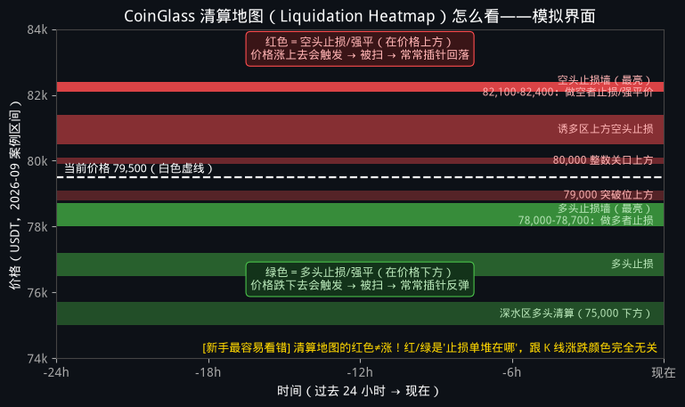
- 红/绿柱子代表什么：红色条带（价格上方）= 空头止损/强平价（做空者的单子，价格涨上去触发）；绿色条带（价格下方）= 多头止损/强平价（做多者的单子，价格跌下去触发）。颜色越亮 = 单子越密集 = 墙越厚
- 怎么找密集区：看现价上方最近的亮红带（最近的空头清算墙）和下方最近的亮绿带（最近的多头清算墙）；密集区通常出现在前高上方、前低下方、整数关口两侧
- 怎么和 K 线对照：清算地图和 K 线两个窗口并排 → 把墙标到 K 线上 → 价格冲进红墙 = 扫空头止损 = 假突破高发（08 章案例 82,248）；止损放墙外侧（逻辑失效位）；K 线结构位和清算墙重合的位置可信度更高
- 新手坑：①不能只看爆仓总量——"今天爆了 5 亿"是结果不是原因，要看爆仓位置（爆在结构位=正常，半空中=异常）②不同币种清算分布不一样（BTC 的墙 ≠ ETH 的墙）③红色 ≠ 涨，清算地图的红绿只表示"止损堆在哪"
（完整步骤版见 00-study-plan.md「工具上手：CoinGlass 清算墙手把手教学」）
反面提醒：爆仓数据是结果不是原因。看到"今天爆了 5 亿"不等于"要反转了"——要先想清楚它是不是在合理位（结构位/流动性池）爆的，这才能回到 01/03 章的框架里解释。
AiCoin — 中文行情聚合
它解决什么问题：手册里所有图表练习（01 章画结构、02 章看指标、08 章走查案例）都需要一个能画线、能切换周期、有指标的看盘环境——AiCoin 网页版/App 免费够用。
配合手册怎么用：
- 01 章裸K练习：在真实 K 线上用画线工具标 HH/HL、支撑阻力、CHoCH——fig02/fig03 是教材，AiCoin 是练习场。每学一个形态，就打开 4H/1H 找 3 个真实例子标出来。
- 02 章指标面板：不用自己写代码算，直接调 EMA/RSI/MACD/布林面板，对照 fig04 的布局认识"指标长什么样、什么时候背离/钝化"。
- 05 章合约数据：多空比、持仓量、全网爆仓等数据在"合约"页都有，配合手册理解。
- 08 章案例回放：把 2026-09 假突破 82,248 / CHoCH 跌破 80,000 那次案例（fig15）在 AiCoin 上自己复盘一遍，再走一遍"结构→信号→入场→止损→出场"。
📖 手把手：价格预警怎么设（图文）
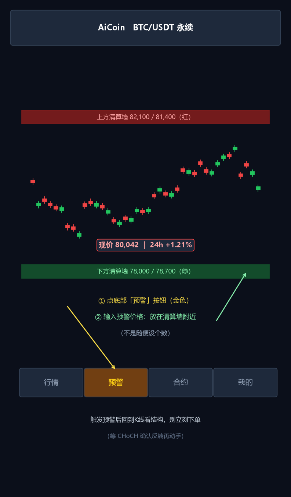
- 打开哪里：AiCoin App（或网页版）→ 打开 BTC/USDT 永续 → 底部点「预警」（金色按钮）
- 输入什么价格：预警设在清算墙附近（配合 CoinGlass 找墙）——不是随便设个数。比如上方 82,100-82,400 有空头墙，就在 82,000 设"到价提醒"；下方 78,000-78,700 有多头墙，就在 78,500 设
- 触发后怎么办：不要立刻下单——回到 K 线看结构：是插针扫墙（等回落/反转确认）还是真突破（等 CHoCH 回踩）。预警只是"叫你去看"，不是"叫你开单"
反面提醒："主力资金流"这类口径各平台算法不同，别当精确信号；看数据先点开口径说明，理解它统计的是什么。
SoSoValue — 投研数据：钱从哪来
它解决什么问题：手册 03b 章讲周期和叙事，但"叙事怎么变成真金白银"需要数据——SoSoValue 的 ETF 资金流、板块资金流就是这条证据链。
配合手册怎么用：
- 03b 章周期验证：打开 BTC/ETH ETF 净流入页面，把资金流曲线和 fig19 减半周期图并排看——理解 2024 后 ETF 资金流如何成为驱动 BTC 中期节奏的核心变量（钱从传统市场流入）。
- 06 章验证方法论：写假设卡（hypothesis）之前，用它的板块/叙事历史数据做背景调研——"这个板块的热度是第一次还是反复出现？"；策略 OOS 落差太大时，也用它查是不是叙事/资金面变了。
- 盘前 Checklist：它的宏观日历（CPI/议息/大额解锁）直接在盘前列出，避免在大事件前开重仓裸奔。
📖 手把手：经济日历怎么用（图文）
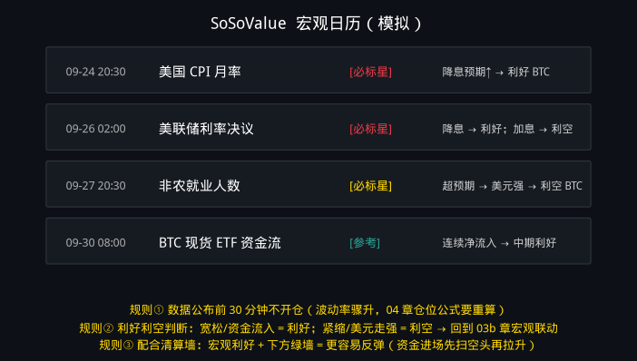
- 哪些事件要标星：美联储利率决议、CPI、非农——这三个对 BTC 波动率影响最大；ETF 资金流、大额解锁等参考即可。在日历上给高影响事件标星，盘前 Checklist 里写上时间
- 数据公布前多久不开仓：前 30 分钟不开仓（波动率骤升，你的止损宽度和仓位要按 04 章公式重算，别拿老参数进场）
- 怎么判断利好利空：宽松/资金流入 = 利好（降息、CPI 低于预期、ETF 净流入）；紧缩/美元走强 = 利空（加息、非农超预期、缩表）→ 传导路径见 03b 章宏观联动
- 怎么和流动性配合：宏观利好 + 下方清算墙 = 更容易反弹——利好消息点燃买盘，先扫下方空头止损墙（插针）再拉升。利好落地瞬间别追第一根 K 线，等结构
反面提醒：资金流数据有滞后和修正，别当日内信号；它是中期趋势确认工具，配合 03b 的周期框架用，别拿来做 5m 短线依据。
FinancialJuice — 实时财经快讯流
它解决什么问题：宏观数据发布（CPI/非农/议息）、央行讲话、地缘新闻——BTC 的高波动时刻往往由这些触发，它比新闻网站快、连续滚动、不带观点。
配合手册怎么用：
- 盘前 Checklist：扫一遍今天/本周的宏观事件和时间，标出"哪些时段波动率会放大"，对应 03b 章宏观联动那一节。
- 04 章仓位推导：大事件前后波动率放大，止损宽度和仓位要跟着调（04 章 ATR 与仓位公式）——数据发布瞬间别挂单，滑点会把你的盈亏平衡胜率门槛抬高（05 章成本账）。
- 盘中突发事件：听到消息先停手，回 03 章"事件驱动"玩法判断：这个消息改变供需/叙事（趋势）还是只是一次情绪脉冲（噪音）？想清楚再动手。
📖 手把手：快讯怎么读（图文）
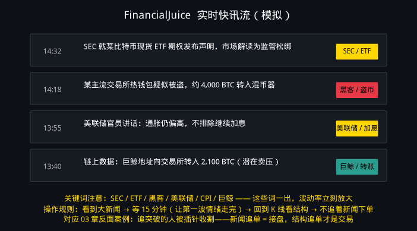
- 哪些关键词要注意：SEC / ETF / 黑客 / 美联储 / CPI / 巨鲸转账——这些词一出，波动率立刻放大（对应 03b 章宏观联动）
- 看到大新闻后怎么做：等 15 分钟（让第一波情绪走完）→ 回到 K 线看结构（是突破还是插针、有没有 CHoCH）→ 不追着新闻下单——对应 03 章反面案例：追突破的人被插针收割，新闻追单 = 接盘，结构追单才是交易
- 配合清算墙：新闻冲击波 + 上方/下方清算墙位置结合看——大新闻往往就是"扫墙"的催化剂（08 章案例的插针就是资金利用新闻/流动性制造的）
反面提醒：快讯告诉你"发生了什么"，不告诉你"会怎样"。看到新闻先回手册推导影响路径（传导链：事件→资金流→持仓→价格），别让标题替你下单。
使用纪律：工具给的是数据/事实，不是信号。任何数字都要回到手册的推导去解释——为什么它极端？它改变期望值还是只改变情绪？工具永远不会替你回答"该不该开单"。
新手阅读路径（先看图，再读书）
不用一次读完所有章。先按顺序看这 4 张图，建立"全书框架 → 价格结构 → 胜率门槛 → 杠杆死亡"的直觉链：
- fig20 知识关联图（README）——看什么：整本书怎么串。00 学习计划 → Part A 看懂市场（01/02/03/03b）→ Part B 管好风险（04/05）→ Part C 验证进化（06/07）→ Part D 实战（08）。先知道每章解决什么问题，再开始读。
- fig02 市场结构（01 章）——看什么：HH/HL 与 CHoCH。这决定你"该在哪边找方向"，是所有裸K打法的地基。
- fig05 盈亏平衡胜率（04 章）——看什么：不同盈亏比下，扣掉手续费后需要多少胜率才保本。图上实测点（随机入场 1:1 ≈ 47.7%、1:3 ≈ 23.9%）全部低于保本线——先认清这个门槛，再谈任何策略。
- fig13 100x 随机模拟（04 章）——看什么：即使不爆仓（全仓 5% 保证金），负期望 + 高杠杆也会在 136~221 笔内归零。感受"手续费 + 胜率不足"如何联手杀死账户。
看完这三张图，再按上表逐章读——你会带着正确的问题去读每一章。
图表索引（全部由真实 BTC 数据 / 实测模拟生成）
| 图 | 文件 | 所在章节 | 内容 |
|---|---|---|---|
| fig01 | figures/fig01_candlestick_patterns.png |
01 | 12 个经典 K 线形态示意 |
| fig12 | figures/fig12_real_candles.png |
01 | BTC 4H 真实K线 + 冲高回落/CHoCH/插针标注 |
| fig02 | figures/fig02_market_structure.png |
01 | HH/HL 市场结构与 CHoCH |
| fig03 | figures/fig03_support_resistance.png |
01 | 支撑阻力/角色互换/扫荡 |
| fig04 | figures/fig04_indicators_panel.png |
02 | 多指标面板（EMA/布林/RSI/MACD/量）真实数据 |
| fig05 | figures/fig05_breakeven_winrate.png |
04 | 盈亏平衡胜率 vs 盈亏比（含手续费/实测点） |
| fig10 | figures/fig10_expectancy_heatmap.png |
04 | 期望值热力图（EV=0 线） |
| fig08 | figures/fig08_compounding.png |
04 | 复利曲线 |
| fig09 | figures/fig09_drawdown_recovery.png |
04 | 回撤恢复率 |
| fig06 | figures/fig06_liquidation_distance.png |
04/05 | 逐仓 vs 全仓爆仓距离 |
| fig07 | figures/fig07_fee_vs_leverage.png |
04/05 | 手续费占保证金比例 |
| fig11 | figures/fig11_money_management.png |
03/04 | 网格 vs 马丁 vs 固定仓位资金曲线 |
| fig13 | figures/fig13_100x_random_sim.png |
04 | 100x随机入场实战模拟（136/198/221 笔归零曲线） |
| fig14 | figures/fig14_review_template.png |
07 | 复盘表格模板（示例两行） |
| fig15 | figures/fig15_case_walkthrough.png |
08 | 假突破+清算反转案例走查（结构/入场/止损/止盈标注） |
| fig16 | figures/fig16_checklists.png |
README | 盘前/入场前/出场后三张 Checklist 卡片 |
| fig17 | figures/fig17_theory_map.png |
03b | 经典理论地图（道氏/威科夫/周期/MTF 怎么配合） |
| fig18 | figures/fig18_wyckoff_spring.png |
03b | 威科夫吸筹 + Spring（弹簧效应）示意 |
| fig19 | figures/fig19_btc_halving_cycle.png |
03b | BTC 减半周期真实数据（2019-2026，两轮节奏） |
| fig20 | figures/fig20_knowledge_map.png |
README | 知识关联图（00-08 章：看懂→管住→验证→实战的完整链路） |
| fig21 | figures/fig21_hhll.png |
01（随文） | 市场结构四件套 HH/HL/LH/LL（真实 4H） |
| fig22 | figures/fig22_support_resistance.png |
01（随文） | 支撑阻力角色互换（真实 1H） |
| fig23 | figures/fig23_liquidation_wall.png |
01（随文） | CoinGlass 风格清算墙（止损单密集区） |
| fig24 | figures/fig24_compounding.png |
04（随文） | 复利曲线（+0.5% vs −0.5%/笔，对数轴） |
| fig25 | figures/fig25_martingale_ruin.png |
03（随文） | 马丁格尔资金曲线实测模拟（3 局归零） |
| fig26 | figures/fig26_kelly_curve.png |
04（随文） | 凯利 f* 曲线（不同盈亏比） |
| fig27 | figures/fig27_leverage_distance.png |
04（随文） | 杠杆 vs 逐仓爆仓距离 |
| fig28 | figures/fig28_breakeven_winrate.png |
04（随文） | 盈亏比 vs 保本胜率（taker/maker） |
| fig29 | figures/fig29_case_202609.png |
08（随文） | 9/3-9/4 案例走查图（假突破/入场/止损/止盈） |
| fig30 | figures/fig30_trap_long.png |
03（随文） | 追多被套全程（同一段行情的对手视角） |
| fig31 | figures/fig31_coinglass_heatmap.png |
00/README（随文） | CoinGlass 清算地图教学示意（红/绿柱子含义、怎么看密集区） |
| fig32 | figures/fig32_aicoin_alert.png |
README（随文） | AiCoin 手机界面预警设置教学示意 |
| fig33 | figures/fig33_sosovalue_calendar.png |
README（随文） | SoSoValue 经济日历教学示意（标星事件+规则） |
| fig34 | figures/fig34_financialjuice_feed.png |
README（随文） | FinancialJuice 快讯流教学示意（关键词+规则） |
随文插图说明：fig21-fig30 是"随文小图"，已直接嵌入各章关键概念旁边（打开章节就能看到图，不用来回翻）；fig01-fig20 是大图/全景图，供放大查看。小图也全部由真实 BTC 数据或实测模拟生成。
重新生成图表：在工作区根目录运行
python3 trading-learning/make_figs_01.py、make_figs_02.py、make_figs_03.py、make_figs_04.py、make_figs_05.py、make_figs_06.py、make_figs_07a.py、make_figs_07b.py、make_figs_08.py、make_figs_09.py（依赖同目录下jiaoyibot/data/的 BTC 5m/1H/4H 历史数据；fig21-30 在 07a/07b，fig31 在 08，fig32-34 在 09）自包含 HTML：
BTC交易学习手册.html（全部 md + 图片 base64 内嵌，双击浏览器直接看，Ctrl+P 可打印）由build_html.py生成：修改任何 md 后运行python3 trading-learning/build_html.py重新生成。
核心纪律（从之前大量回测里总结的血泪教训）
- 胜率不是一切，期望值才是：EV = 胜率×平均盈利 − 败率×平均亏损 − 手续费。
- 盈亏比 1:3 不等于 3 倍利润：市场先碰到你止损的概率不是线性的，随机入场 1:3 在 BTC 5m 实测胜率仅 ~24%。
- 手续费是隐形成本之王：100x 杠杆下每次双向 taker ≈ 保证金的 15.4%，比 1R 止损还狠。
- "1% 就爆仓"取决于仓位：5% 保证金 + 100x 全仓，爆仓距离约 19.6%；100% 满仓，爆仓距离约 0.52%（04 章完整推导）。
- 没有未来函数：T 日收盘后出信号，T+1 开盘价成交；禁止"用收盘价算又按收盘价成交"。
- 每次实验只改 1 个变量，与基准对比，报告扣成本后的收益。
- 至少 200 笔样本再下结论；手动复盘会骗自己（选择性记忆 + 前视偏差）。
- 学习的捷径是复盘 → 假设 → 程序化验证，不是看更多指标。
交易前 / 中 / 后 Checklist（打印出来贴屏幕边）
卡片样式见
figures/fig16_checklists.png。三张清单，每笔交易都过一遍。
【1】盘前检查（开电脑先做）
- [ ] 看大周期结构：4H/1D 现在是什么方向？震荡还是趋势？
- [ ] 查重要数据/事件：今天有没有宏观数据、议息、大额解锁？（影响波动率）
- [ ] 定好当日交易区域：今天只在自己的支撑/阻力区附近动手，区间外不做。
- [ ] 复盘昨天最后一笔交易：昨天犯的错，今天别再来一遍。
【2】入场前必检（手放鼠标上，先过 4 关）
- [ ] 结构是否成立：CHoCH / 有效突破确认了吗？还是只是"感觉"？
- [ ] 止损位是否合理：放在结构外（逻辑失效位）了吗？不是拍脑袋。
- [ ] 风险占本金 ≤ 1-2%：仓位用公式算过（04 章 C），不是随手开。
- [ ] 有没有情绪冲动：FOMO / 报复性 / 无聊手痒？有就关掉下单键。
【3】出场后记录（平仓第一件事）
- [ ] 立刻填复盘表（07 章模板，5 分钟）。
- [ ] 记录情绪标签：平静 / 紧张 / FOMO / 满足……
- [ ] 不要立刻开下一单：至少空仓冷静，复盘完再想下一笔。
三张清单的本质：盘前定计划 → 入场前查纪律 → 出场后收数据。做不到第 1 张和第 3 张的人，第 2 张再严格也会慢慢变形。
快速自查：你想交易什么风格？
- 看盘时间少 → 4H/1D 波段、趋势跟踪（03 章 A 类）
- 看盘时间多、能盯盘 → 1m/5m/15m 裸K日内（03 章 C/D 类）
- 讨厌盯盘、追求机械 → 网格/定投/趋势策略系统化（03 章 E 类）
- 追求高胜率 → 别忘了盈亏比通常同步下降（mini 止盈是反面教材，看 04 章）
📊 本章配图（大图 / 全景，可点击放大）
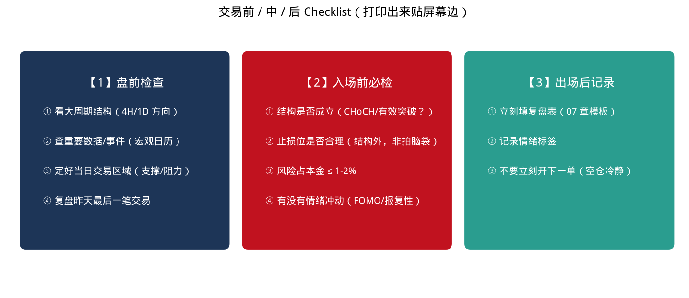
fig16 盘前/入场前/出场后三张 Checklist 卡片00 · 30 天学习计划（自学路线图）
本章解决什么问题：学什么、按什么顺序、每天花多少时间、学到什么程度算过关。 用法：把本页打印出来贴在桌前，每天打卡。自测标准不过关就放慢，不要赶进度。
总览
| 阶段 | 天数 | 主题 | 文件 | 每天时长 | 阶段自测标准 |
|---|---|---|---|---|---|
| 第 1 周 | 1-7 | 地基：裸K + 合约机制 | 01 → 05 | 45-60 分钟 | 能徒手画出 BTC 1H 结构图（HH/HL/CHoCH/流动性池）；能说出爆仓引擎怎么工作 |
| 第 2 周 | 8-14 | 数学与风控 | 04（先）→ 02 | 60 分钟 | 不看公式能算：盈亏平衡胜率、仓位大小、清算价、期望值；5 道笔算题全对 |
| 第 3-4 周 | 15-30 | 系统化 | 03 → 03b → 06 → 07 → 08 | 60-90 分钟 | 写出自己的交易假设卡；完整复盘 5 笔模拟交易；做出自己的交易 checklist |
每天固定节奏：阅读 + 笔记 40 分钟 → 刷当天速记卡（Anki）10 分钟 → 写 3 行学习日志 5 分钟。周日 60 分钟做周总复习（重做本周所有思考题，不看答案）。
🗺️ 开始前先做一件事：打开
figures/fig20_knowledge_map.png看 2 分钟——知道每章解决什么问题、怎么串成链路（看懂 → 管住 → 验证 → 实战）。然后从 D1 开始。
工具上手：CoinGlass 清算墙手把手教学（配合 01 章 3.4、08 章案例）
README「开工前准备」的工具清单只说了"什么时候用 CoinGlass"，这一节教你怎么实际操作。先学 01 章 3.4 再上手看，就不会被红绿绕晕。
第 1 步：打开哪个页面
- 浏览器打开 coinglass.com（免费，网页版即可，不用注册；App 功能一样）
- 顶部导航栏找到 Liquidation（清算）→ 点进去就是清算页面
- 页面中间的大图就是 Liquidation Heatmap（清算热度图/清算墙）：横轴 = 时间（默认近 24 小时，可调 12h/24h/7d），纵轴 = 价格
- 左上角可切换币种（BTC/ETH/其他）和合约类型——新手用默认的 BTC 永续就行
第 2 步：图怎么看（对照下图）
- 图中横向彩色条带 = 该价格附近堆了多少"会被强平/止损"的单子
- 红色条带在价格上方 = 空头止损/强平价（做空的人把止损放在这，价格涨上去就触发）
- 绿色条带在价格下方 = 多头止损/强平价（做多的人把止损放在这，价格跌下去就触发）
- 颜色越亮 = 单子越密集 = "墙"越厚；白色虚线 = 当前价格
第 3 步：怎么找上方/下方的清算密集区
- 找到白色现价线
- 看现价上方最近的亮红带 → 最近的空头清算墙（涨到那里大概率插针）
- 看现价下方最近的亮绿带 → 最近的多头清算墙（跌到那里大概率插针）
- 密集区通常出现在：前高上方、前低下方、整数关口（80,000/79,000）两侧——因为新手止损都放那里
第 4 步：怎么和 K 线对照看
- CoinGlass 清算地图 + 交易所 K 线图（1H/4H）两个窗口并排（CoinGlass 的币种页里也能叠加 K 线）
- 把清算墙的位置标到 K 线上：比如"82,100-82,400 有空头墙" → 对应 08 章案例的假突破位
- 用途①找插针目标：价格冲进红墙 = 扫空头止损 = 常常假突破回落（08 章案例 82,248）
- 用途②放止损：把止损放在墙外侧（逻辑失效位），而不是墙里面（01 章 3.4 的机制推导）
- 用途③验证结构：K 线结构位和清算墙位置重合时（比如前高 = 空头墙），那个位置的可信度更高
第 5 步：新手最容易看错的地方（划重点）
- ❌ 把红色当"要涨"——清算地图的红/绿是"止损堆在哪"，跟 K 线涨跌颜色完全两码事。"上方一片红"的意思是"上方有空头止损等着被扫"，不是看涨信号
- ❌ 把清算墙当"一定会到的目标"——墙是流动性池，价格可能被吸过去、也可能根本不碰；扫完不一定反转（可能继续走）
- ❌ 忽略时间范围——7 天地图上的老墙可能早就扫完了；要看"当下价格附近、近 24h"的墙
- ❌ 只看爆仓总量——"今天爆了 5 亿"是结果不是原因；要看爆在哪个位置（爆在结构位 = 正常，爆在半空中 = 异常）
- ❌ 不看币种/合约类型——BTC 的墙和 ETH 完全不同；永续和交割的地图也不同
配套图：fig31（本页模拟界面）+ fig23（清算墙概念图，01 章 3.4 详解）。D3 的"标出所有止损密集区"就用这个工具做。
第 1 周（D1-D7）：地基——先学会"看"市场
| 天 | 内容 | 关键动作 |
|---|---|---|
| D1 | 01 章：K 线形态 | 打开真实 1H 图，找出 5 个上影线/锤子/吞没，截图标注 |
| D2 | 01 章：市场结构 | 找 10 个 HH/HL、10 个 LH/LL，画结构线 |
| D3 | 01 章：支撑阻力 + 流动性 | 标出图上所有"止损密集区"（前高上方/前低下方） |
| D4 | 05 章：合约机制（杠杆/爆仓/资金费） | 用笔算题练 3 遍清算价公式 |
| D5 | 05 章：插针/滑点/手续费 | 对比 taker vs maker 成本 |
| D6 | 复习 + 图 19 减半周期 | 徒手画 BTC 2019-2026 大周期走势（不看图） |
| D7 | 阶段自测 | ✅ 徒手画 1H 结构图；✅ 说出假突破怎么杀流动性；✅ 5 张速记卡脱口而出 |
第 2 周（D8-D14）：数学与风控——先学会"算"账
| 天 | 内容 | 关键动作 |
|---|---|---|
| D8 | 04 章：期望值与盈亏平衡胜率 | 算 3 组盈亏平衡胜率（不同费率/盈亏比） |
| D9 | 04 章：仓位公式 | 笔算题：不同止损距离下的仓位 |
| D10 | 04 章：爆仓距离（逐仓/全仓） | 笔算题：10x/25x/100x 清算价 |
| D11 | 04 章：手续费与复利 | 算"100 笔 1% 手续费 vs 无手续费"差异 |
| D12 | 02 章：指标四类 | 每个指标只记"算什么/怎么用/何时失效"一句话 |
| D13 | 02 章：指标组合 | 只保留 2-3 个指标，别堆叠 |
| D14 | 阶段自测 | ✅ 5 道笔算题全对（不看公式）；✅ 说出手续费如何杀死 100x 账户 |
第 3-4 周（D15-D30）：系统化——把知识变成规则
| 周 | 内容 | 关键动作 |
|---|---|---|
| D15-17 | 03 章：玩法流派 | 选出 1 个想深入的打法，写下"为什么选它" |
| D18-20 | 03b 章：经典理论 | 画出"假突破=Spring=流动性猎杀"的等价关系图 |
| D21-23 | 06 章：验证方法论 | 为你的打法写一张 hypothesis.md（研究假设卡） |
| D24-26 | 07 章：复盘 + 08 章：案例 | 用 08 章案例做一次完整复盘；再用复盘表复盘自己 5 笔模拟交易 |
| D27-28 | 整合 | 做出自己的"盘前/入场前/出场后"checklist；写交易规则 10 条 |
| D29-30 | 模拟盘（只做模拟） | 用规则模拟交易 10 笔，每笔填复盘表；统计胜率/期望值 |
| D30 | 结业自测 | ✅ 有假设卡；✅ 有 checklist；✅ 有 10 笔模拟复盘记录；✅ 能讲清"我什么时候不做" |
自测标准（具体化，别自欺）
- 第 1 周结束：拿一张你没见过的 1H 图，5 分钟内：画出结构线、标出 3 个流动性池、指出哪里会假突破。做不到 = 第 1 周重来。
- 第 2 周结束：手机关掉，纸笔算：①止损 2%、盈亏比 1:2、taker 双边 0.154%，保本胜率是多少？②账户 5000U、风险 2%、止损 1.5%、10x，开多少名义？③100x 满仓的爆仓距离？全对才算过。
- 第 3-4 周结束：你的假设卡、checklist、10 笔模拟复盘三者能互相咬合：复盘里每笔单都能对应 checklist 某条规则。
常见问题
- 一天学不完怎么办：按"关键动作"优先，速记卡可以后补。宁可 D7 自测不过关重来，也不要带着窟窿进第 2 周（后面全是建立在数学上的）。
- 要不要先学指标再学裸K：不要。指标是裸K的衍生品（02 章会说），先结构后指标。
- Anki 卡什么时候刷：每天 10 分钟刷当天的卡 + 30 张随机旧卡。间隔重复比突击背诵有效 10 倍。
下一步：从
01-naked-candlestick.md开始，D1。
📊 本章配图（大图 / 全景，可点击放大）
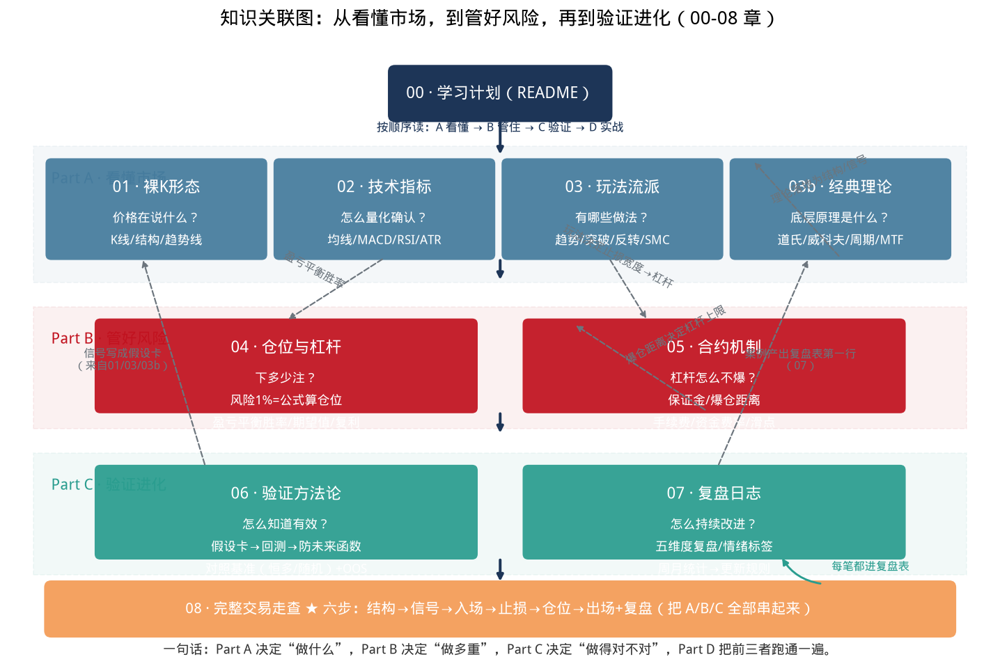
fig20 知识关联图（00-08 章：看懂→管住→验证→实战的完整链路）01 · 裸K与价格行为（自学版）
本章解决什么问题：为什么你总在"突破买入"后立刻被套？为什么价格总在你想止损的位置反着走？ 答案不在指标里，在 K 线和结构里。学会这章，你就有了后面所有章节的地基。 配套图：
fig01_candlestick_patterns.png、fig02_market_structure.png、fig03_support_resistance.png、fig12_real_candles.png（真实 BTC 4H）
1. 直觉理解（一句话本质）
K 线是"多空交战留下的脚印"，结构是"脚印画出的地图"，流动性是"地图上埋雷的地方"。
- 一根 K 线 = 一段时间内（1m/5m/1H/4H/1D）的开高低收。收盘价 < 开盘价 = 绿（空胜），收盘价 > 开盘价 = 红（多胜）。上下影线 = 某一方曾被推回去。
- 形态（锤子/吞没/十字星等）只是"某一方反击失败"的快照；形态本身不预测，它告诉你交战结果。
- 真正的信息在结构里：一系列高低点的排列方式。
2. 数学/逻辑（为什么有效）
K 线形态有效（如果有效的话）的唯一逻辑是供需失衡 + 止损单集中：
- 价格创新高/新低时会扫掉上方空头止损或下方多头止损——这些止损单是"被迫成交的流动性"。
- 流动性被扫光后，推动价格的燃料就没了 → 反转。这就是"假突破"的力学解释。
- 所以形态不重要，形态发生的位置（结构关键位 + 流动性池）才重要。同样的锤子线，在支撑位是反弹信号，在半空中毫无意义。
记住这个因果链，后面所有章节（Spring、清算反转、CHoCH）都是它的换皮说法：
止损单集中在结构位 → 价格被吸引过去 → 扫止损（插针）→ 燃料耗尽 → 反转
3. 实战应用（BTC 上怎么用）
3.1 市场结构：HH/HL/LH/LL（看 fig02）
上升趋势: HH（更高的高点）+ HL（更高的低点）
下降趋势: LH（更低的高点）+ LL（更低的低点）
震荡: 高点低点都没有递进
CHoCH: Change of Character——趋势的第一次反向破坏
（上升趋势中出现第一个 LH = 结构可能反转）
- 每天做一次：打开 1H 图，画 HH/HL/LH/LL 连线，问自己"现在是什么趋势"。
- CHoCH 是 08 章案例的入场核心：跌破 80,000 那根大阴线 = 1H 的 CHoCH。
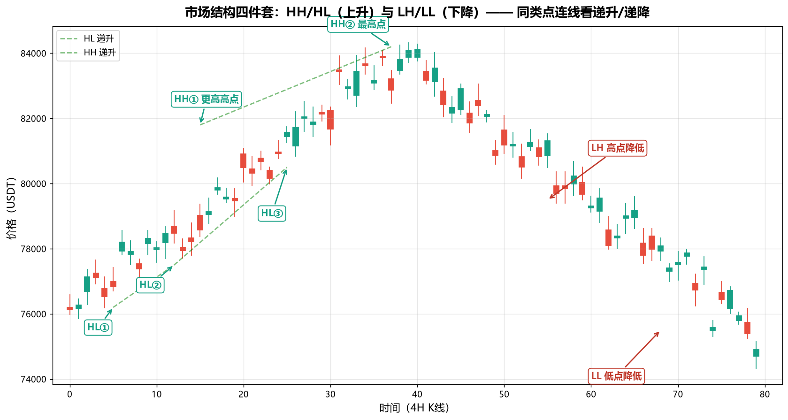
看上面这张图：低点 76,370 → 76,228 → 76,919 是 LL→HL 的转折（下跌转上涨）；高点 81,340 → 82,248 是 HH（突破上升）；之后 81,377 → 79,825 是 LH（高点降低，转空）。趋势 = 这些点递进的方向。
3.2 支撑阻力 + 角色互换（看 fig03）
- 阻力被突破后变支撑，支撑被跌破后变阻力（角色互换）。因为同一批人在同一个价位做了相反的决定。
- 实战：突破后回踩"旧阻力"不破 = 确认；突破后立刻跌回 = 假突破（别追）。
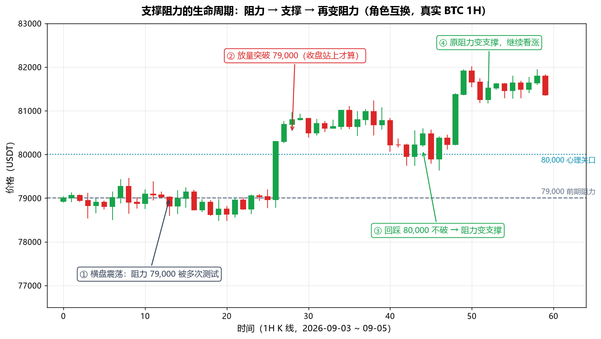
看 78,900 这条线的一生：多次测试不破（阻力）→ 放量突破 → 回踩不破（变支撑）→ 跌破后反抽受阻（再变阻力）。同一批人，同一价位，相反的命运。
3.3 假突破 / 流动性猎杀（本手册最核心的概念）
- 前高上方 = 空头止损池；前低下方 = 多头止损池。
- 假突破 = 价格故意穿过关键位、扫掉止损、然后收回（看 fig12 的冲高回落标注）。
- 交易含义：
- 不要在突破瞬间追单（你大概率是流动性本身）；
- 等"突破失败收回"的信号（2-3 根 K 线收回突破位）= 反转机会；
- 08 章案例、03b 章 Spring 都是这一个故事的变体。
3.4 推导：为什么"止损别放明显位"（前高上方一点点 = 送钱）
规则：止损不要放在"人人都会放"的位置——比如前高上方 10 美元、整数关口上方一点点。下面推导为什么。
机制推导（三步）：
- 止损单是"已知的强制买/卖盘"。你的止损单挂在交易所，就是一张"价格到 82,410 就必须市价卖出"的挂单。它和其他几千张同位置的止损单一起，构成一个可见的流动性池。
- 价格会被吸引过去。为什么？因为"扫掉止损池"对大户/机器人来说是确定的成交机会：他们知道突破 82,400 会触发连环卖单（价格被砸下去），于是提前在 82,400 上方埋伏卖单——他们卖给你，你被迫割肉。
- 扫完就没了燃料。止损单被触发 = 这些被迫卖单一次性成交完毕，推动价格继续下跌的抛压消失 → 价格经常在扫完止损后反弹（假突破）。
具体账（真实案例 2026-09-03，08 章完整展开）：
假设你在 80,500 做多，止损放"前高 80,514 上方一点"= 80,550
9/3 21:00 价格插针到 82,248：
你的止损 80,550 早就被扫了（价格 82,248 附近先跌回 80,550）
你在 80,550 割肉离场
但价格之后一路跌到 74,910——你"止损对了"却没赚到反转

> 这张图就是"清算地图"长什么样：价格上方的红墙是空头止损/清算单密集区，下方的绿墙是多头止损/清算单密集区。价格会被吸过去扫墙——扫完燃料耗尽就反转（81,000 追多的人就是燃料）。
正确做法：止损放"逻辑失效位"（82,400，插针上方）
价格插针 82,248 没到你止损 → 你拿住单子 → 等到 CHoCH 确认后盈利
边界（止损放哪才对）： - 对：结构止损 = 价格回到这里 = 你的入场逻辑失效（如插针高点上方、突破前低下方），哪怕距离远。 - 错：心理关口/前高前低"上方一点点"（这是止损池中心，专门被扫）。 - 折中：止损距离要 ≥ 1.5-2×ATR（02 章推导），否则正常波动就把你扫出去（03 章 3.3 节）。
3.5 推导：为什么"突破瞬间追单"= 你大概率是流动性本身
对手方分析：突破瞬间，市场上谁在卖？
- 突破前的空头止损单（被迫买入）——他们是被扫的，不是主动的；
- 突破后追多的散户市价单（你）——你的买入被"突破动能"吸引；
- 埋伏在突破位上方的大户限价卖单（等流动性来）——他们早就挂好了。
结果：突破瞬间买入 = 你接的是大户的卖单（2 和 3 成交），而大户卖给你之后，价格失去买盘支撑 → 回落。你在为别人的"流动性猎杀"提供燃料。
账：追 82,000（08 章案例）vs 等回踩 79,500，同一笔行情利润差 2.4 倍（03 章 2.2 节完整推导）。追单的数学代价是止损距离和 RR，不是运气。
3.6 关键：位置 vs 形态（为什么同样的锤子线在支撑位才有效）
推导：锤子线 = 下影长、收盘回到上半部 = "下方买盘把价格顶回来了"。但顶回来之后呢？
- 在支撑位：下方就是多头止损池。价格跌破支撑 → 触发止损卖单 → 如果还能被买盘接住拉回，说明多头意愿强于止损抛压 = 供需反转的强证据 → 后续上涨有"燃料"（止损池被清空，上方阻力减小）。
- 在半山腰：下方没有止损池，跌破 = 没有强制抛压被消耗，"顶回来"只是普通的多空拉锯 → 没有信号价值。
结论：形态是"证据"，位置是"案件"——同一个证据在不同案件里分量完全不同。
4. 新手误区（最常见错误）
- ❌ 只看形态不看位置：锤子线在半山腰 = 噪音，在支撑位 = 信号。
- ❌ 把插针当突破：盘中插针不算，收盘价站上才算（道氏确认原则，03b 章）。
- ❌ 在突破瞬间市价追单：你追的那一单可能正是主力要扫的止损单。
- ❌ 不会画结构就找形态：先画 HH/HL，再谈形态。
速记卡（抄进 Anki，每天刷）
- Q: 上升趋势的定义？ A: HH + HL（更高的高点和更高的低点）。
- Q: CHoCH 是什么？ A: 趋势第一次反向破坏（升势中出现第一个 LH / 降势中第一个 HL）。
- Q: 为什么假突破会反转？ A: 扫掉止损池的流动性后燃料耗尽（供需失衡反向）。
- Q: 插针算突破吗？ A: 不算，收盘价站上才算。
- Q: 阻力被突破后变成什么？ A: 支撑（角色互换）。
- Q: 形态重要还是位置重要？ A: 位置（结构关键位 + 流动性池）远比形态本身重要。
思考题（先自己想，答案在本节末尾）
- 一根 1H K 线：开盘 30,000，最高 30,500，最低 29,500，收盘 29,800。它是什么颜色？上影线长还是下影线长？说明当时哪方更占优？
- 价格在 30,000 横了 3 天，某天突然一根大阳线冲到 30,600 收盘，但第二天又跌回 30,000 下方。你手里有按 30,500 追的多单——现在该想什么？为什么？
- 为什么"同样的锤子线"在支撑位比在半山腰有效？用流动性/止损单的逻辑解释。
参考答案
1. 收盘 29,800 < 开盘 30,000 → **绿**（空胜）。影线：上影 500（30500-30000）、下影 300（30000-29500）→ 上影长。说明多头冲高被空头打回，**空方占优**。 2. 该想"我可能买在了流动性池里"。冲到 30,600 收盘是**假突破**（没能站稳），跌回 30,000 下方 = 突破失败 → 上方 30,600 附近的多头止损/追多单就是被扫的流动性。正确动作是**按计划止损**（如果你没设止损，这就是第一课）。 3. 因为支撑位下方是**多头止损池**：价格跌破支撑会触发批量止损卖单 = 一次性供给；如果价格还能快速收回，说明这批供给被接住了 → 供需反转的强证据。在半山腰，锤子线两边都没有止损单，没有"燃料"可扫，也就没有反转的力学基础。新手最常踩的坑（每周检查一遍）
- [ ] 我是不是又在半山腰追突破了？
- [ ] 我设的止损是不是正好放在"人人都会放"的位置（前高上方一点点）？（如果是，你就是在给别人送流动性）
- [ ] 我画结构线是"事后画"还是"事先画"？（事后再画 = 自欺）
📊 本章配图（大图 / 全景，可点击放大）
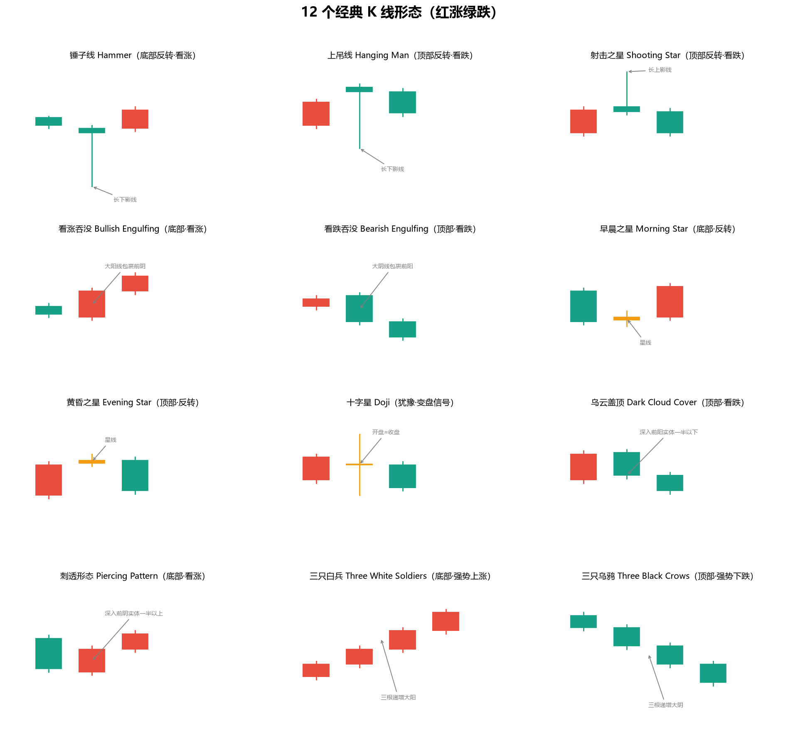
fig01 12 个经典 K 线形态示意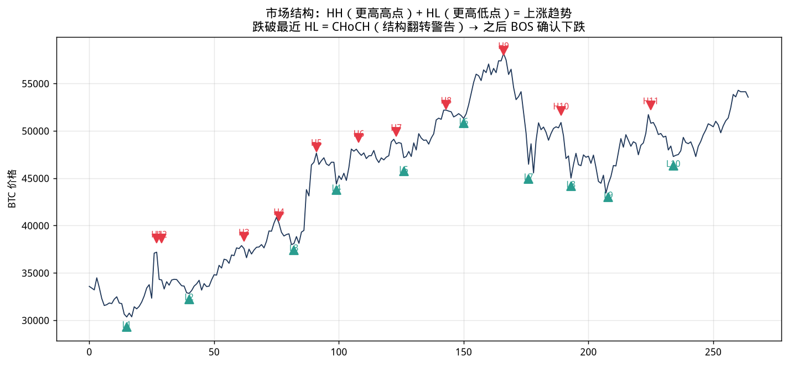
fig02 HH/HL 市场结构与 CHoCH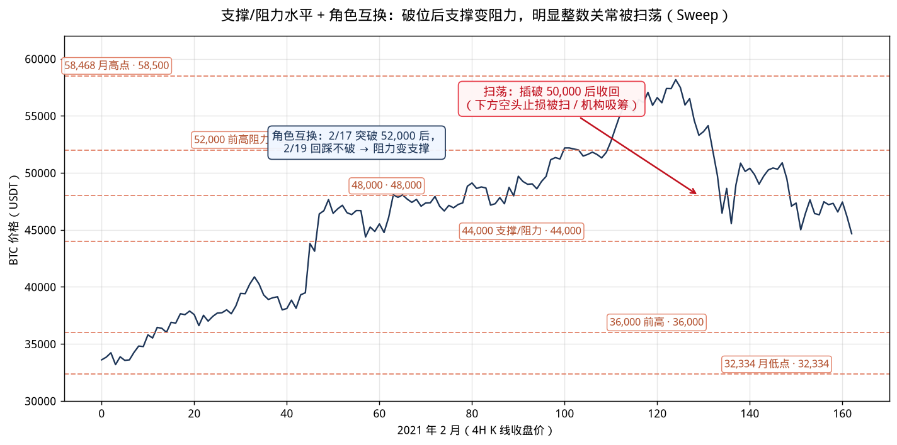
fig03 支撑阻力/角色互换/扫荡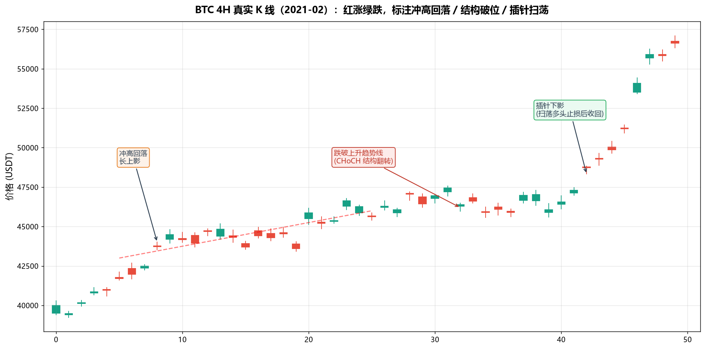
fig12 BTC 4H 真实K线 + 冲高回落/CHoCH/插针标注02 · 技术指标全景（自学版）
本章解决什么问题：指标那么多，为什么堆了一屏还是亏？哪个指标值得用，哪个是噪音？ 答案：先懂每个指标"算什么 → 怎么用 → 何时失效"，再只留 2-3 个。 配套图：
fig04_indicators_panel.png（真实 BTC 数据多指标面板）
1. 直觉理解（一句话本质）
指标是 K 线价格/成交量的"加工品"，不是新信息。 它只是把已经发生的价格变化换个算法再画一遍。
- 趋势类（均线/ADX）：回答"方向是什么"。
- 摆动类（RSI/KDJ/MACD）：回答"短期是不是过热/超卖"。
- 量能类（OBV/成交量）：回答"这波移动有没有人真的参与"。
- 波动类（布林/ATR）：回答"现在波动多大、止损放多远"。
2. 数学/逻辑（公式怎么算的）
| 指标 | 公式本质 | 数学直觉 |
|---|---|---|
| MA(n) | n 根收盘价平均 | 平滑噪音，看方向 |
| EMA(n) | 加权平均，近期权重更大 | 对价格变化反应更快 |
| MACD | DIF=EMA12−EMA26；DEA=DIF 的 EMA9；柱=(DIF−DEA)×2 | 两快慢均线之差：差变大 = 动能增强 |
| RSI(n) | 100 − 100/(1+RS)，RS=平均涨幅/平均跌幅 | 涨跌力量的比值：>70 超买、<30 超卖 |
| 布林带 | 中轨 MA20 ± 2×标准差 | 价格偏离均值 2 个标准差 = 统计学上"极端" |
| ATR(n) | 平均真实波幅（含跳空） | 波动率的绝对值：ATR 大 → 止损要放远 |
关键数学事实：所有指标都是价格的函数——价格先动，指标后动。所以指标永远滞后，只能描述过去，不能预测未来。
3. 实战应用（怎么用不亏）
- 均线/ADX 定方向：ADX>25 = 趋势存在，顺趋势做；ADX<20 = 无趋势，别追突破。
- RSI 只做"背离"和"极端"：RSI>70 不自动做空（强趋势可以一直超买），但价格新高 + RSI 不新高 = 背离 = 动能减弱，值得警惕。
- ATR 放止损：止损距离 ≥ 1.5-2×ATR，否则你是在给市场送钱（正常波动就把你扫了）。这是指标对仓位管理最实用的贡献。
- 布林带收口 = 变盘前兆：波动收缩后必然扩张，但方向不告诉你——等收口后第一根放量 K 线方向。
- 只用 2-3 个：1 个趋势 + 1 个摆动 + ATR（管止损）。多了只会互相打架。
3.1 推导：为什么止损要 ≥ 1.5-2×ATR（不是 1×，不是 0.5×）
问题：止损放太窄会怎样？用一个思想实验 + 真实数据推导。
思想实验：ATR = 平均每根 K 线波动（含跳空）。如果你的止损 = 0.5×ATR，意味着市场只要走出半根"平均 K 线"的波动你就出局。而 BTC 4H 的 ATR 通常在 0.8-2%——0.5×ATR 止损 ≈ 0.4-1% 的价格波动。这个幅度里有多少是"方向错误"、多少是"正常噪声"？大部分是噪声。
真实数据验证（本手册 6 年 BTC 4H 数据）： - 单日振幅 ≥ 5% 的天数：6 年里有几十天（2020-03-12 振幅 44.2%、2021-05-19 振幅 33.5%）； - 普通趋势日：2-5% 振幅是常态。
推导（数学期望角度）：设你的入场信号真实命中率 = p（信号确实对的比例）。止损 = 1×ATR 时，即使方向看对，一根正常波动 K 线就可能触发止损（价格先反向 1×ATR 再回正 = 被洗出局）。洗出局 = 你"看对了方向却亏了钱"，实际胜率从 p 掉到 p'：
止损 0.5×ATR：噪声洗出概率极高 → p' ≈ p − 30~50%（经验估计，依据：波动分布）
止损 1.0×ATR：仍有一半噪声窗口 → p' ≈ p − 15~25%
止损 1.5-2×ATR：噪声窗口覆盖 1.5-2 倍平均波动，方向对了基本不会被正常波动扫掉 → p' ≈ p
代价：止损越宽，单笔亏损越大 → 仓位越小（04 章 5.4：名义 = 风险%/止损距离）→ 单笔盈利也小。1.5-2×ATR 是"信号保真度"和"仓位效率"的平衡点——低于它，你的胜率被噪声偷走；高于它（3×ATR+），止损太远、仓位太小、盈亏比恶化。
边界： - 波动率骤变时（重大消息/崩盘日，ATR 会突然放大）：固定 2×ATR 可能变成"超宽止损"，此时按结构止损优先（01 章 3.4：逻辑失效位），ATR 只做下限参考。 - 超短线 maker 高频（1.2 节 03 章）：止损可以 <1×ATR，但前提是手续费极低 + 胜率极高——这是少数特例，不是默认。
3.2 ADX 阈值的诚实标注
"ADX>25 有趋势、<20 无趋势"是经验值，依据：Wilder 原著（1978）建议 25 为趋势/无趋势分界，行业沿用至今。没有数学推导保证 25 是最优阈值——它只是"大多数市场状态下的经验分界"。用法：当作粗略开关（>25 顺趋势、<20 别追突破），不要因为 ADX=26 就重仓、ADX=24 就不做——阈值附近 5 个点内都是灰色地带。
3.3 推导：为什么布林带收口后必然扩张（变盘前兆）
布林带 = 中轨 ± 2×标准差（20 周期）。标准差衡量波动。波动收缩（收口）= 标准差变小 = 价格在一个很窄的区间内来回。 但市场不可能永远窄幅——波动率有均值回归特性（依据：金融时间序列的波动聚集/回归实证，如 ARCH/GARCH 模型文献），收口后通常伴随一次波动放大（扩张）。方向不确定，但幅度必然放大——所以"收口后等第一根放量 K 线方向"是给这次放大定价的可行办法。
4. 新手误区
- ❌ 指标越多越好：一屏指标 = 一屏滞后信息，互相矛盾时你只会更焦虑。
- ❌ 用 RSI 超买超卖当独立信号：强趋势里 RSI 可以 80 待一个月。
- ❌ MACD 金叉死叉当买卖点：震荡市里金叉死叉来回打脸；它只描述动能，不描述结构。
- ❌ 指标和结构冲突时信指标：结构（HH/HL）永远优先于指标。指标是衍生品，结构才是原材料。
速记卡（Anki）
- Q: 指标的本质？ A: 价格/成交量的加工品，滞后、描述过去，不预测。
- Q: RSI 什么时候有效？ A: 背离（价新高指标不新高）和极端区，不用于强趋势超买超卖。
- Q: 止损距离和 ATR 什么关系？ A: 止损 ≥ 1.5-2×ATR，否则正常波动就扫你。
- Q: 布林带收口意味着什么？ A: 波动收缩后必然扩张（变盘），但方向要等放量 K 线确认。
- Q: ADX 怎么用？ A: >25 有趋势（顺趋势做），<20 无趋势（别追突破）。
- Q: 指标和结构冲突时听谁的？ A: 结构（HH/HL/供需区），指标永远第二。
思考题（先自己想，答案在末尾）
- 为什么"MACD 金叉买入"在震荡市会连续亏损？用指标滞后性解释。
- 你的止损距离是 0.3%，ATR(14) 是 0.5%。这笔单有什么问题？应该怎么改？
- RSI=72 且价格正在创新高、上升趋势完好——你会怎么做空吗？为什么？
参考答案
1. 金叉是"过去 12/26 根均线收敛后再发散"的结果——它确认的是**已经发生的**上涨。震荡市里价格上下反复，每次金叉时上涨动能已经用尽，你买在局部高点；死叉时跌势已尽，你卖在局部低点。指标描述的过去 ≠ 未来的延续。 2. 止损 0.3% < ATR 0.5% = 止损比正常波动还窄 → 大概率被随机噪音扫掉（即使方向看对）。应把止损放到 ≥0.75-1.0%（1.5-2×ATR），同时**缩小仓位**（止损变宽，仓位按 04 章公式相应减小）。 3. 不会。RSI>70 + 新高 + 趋势完好 = 强趋势的正常状态（RSI 可以长期高位）；此时做空是逆势猜顶。RSI 的"超买"只在**背离**（新高但 RSI 不新高）或**结构反转**出现时才值得警惕。新手最常踩的坑
- [ ] 我是不是又把指标当"预测工具"用了？
- [ ] 我的止损是不是小于 1.5×ATR？（是 = 立刻改）
- [ ] 我屏幕上是不是超过 4 个指标？（是 = 删到 3 个）
- [ ] 指标信号和 HH/HL 结构冲突时，我是不是还是按指标做了？
📊 本章配图（大图 / 全景，可点击放大）
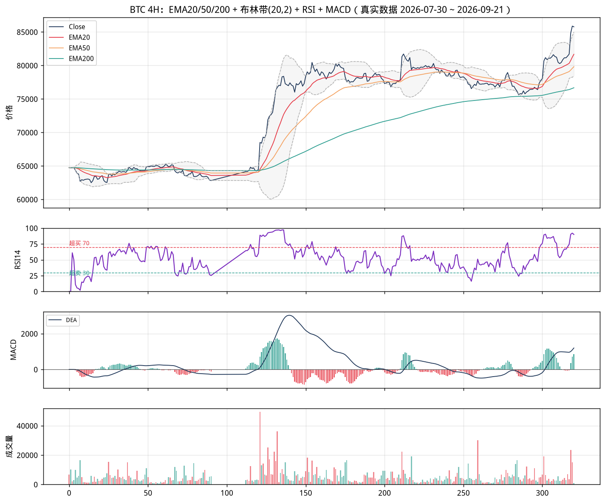
fig04 多指标面板（EMA/布林/RSI/MACD/量）真实数据03b · 经典交易理论基础（实战向）
本章解决什么问题：道氏/威科夫/周期这些经典理论，到底哪些对 BTC 有用？怎么用？ 目标：掌握四把尺子——道氏定方向、威科夫找拐点、周期定仓位、多周期共振定执行。 配套图：
fig17_theory_map.png（四把尺子配合）、fig18_wyckoff_spring.png（Spring）、fig19_btc_halving_cycle.png（减半周期真实数据）
1. 直觉理解（一句话本质）
经典理论 = 给市场结构起名字的体系。 它们和 01 章 SMC/流动性/假突破共用同一套底层语言：供需失衡 → 价格移动到流动性池（止损/爆仓单）→ 扫掉后反转 → 形成结构（高低点）。学它们的唯一目的是：市场出现某个结构时，你能立刻知道该做什么、不该做什么。
2. 数学/逻辑（三条最硬的内核）
- 道氏：趋势 = 高低点递进。上升 = HH+HL，下降 = LH+LL，都不是 = 震荡。确认靠收盘价（插针不算——这就是 08 章"插针 82,248 不算真突破"的原因）。趋势分三阶段：积累（聪明钱悄悄买）→ 公众参与（主升）→ 派发（卖给接盘侠）。
- 威科夫三定律：供需定涨跌（成交量为证）；因果（横有多长竖有多高）；努力与结果（放量但价格不动 = 反转前兆）。
- 周期 + 情绪：BTC 每 4 年减半（供给减少），历史上减半后 12~18 个月主升、狂热见顶、熊 1-2 年。恐惧贪婪指数（0-100）是情绪的体温计，不是买卖信号。
为什么这几点是"数学"不是"玄学"：它们都建立在可观察的价格/成交量行为上，可被证伪（06 章假设卡可以检验"突破收回后反转概率"），不像艾略特数浪/江恩时间周期那样十个人数出十一种答案。
3. 实战应用（四把尺子）
3.1 尺子① 道氏：每天 30 秒定方向
打开 1D K 线，问：现在是 HH/HL、LH/LL 还是震荡？就这一个动作过滤一半烂交易。
- 2024-10 → 2025-01：日线 HH/HL → 只做多/回踩做多；
- 2025-11 → 2026-06：日线 LH/LL → 多单别抢，反弹做空或观望；
- 2026-07 → 09：低点抬高、高点未创新高 → 震荡 → 区间交易或空仓。
判断阶段不看新闻，看价格对消息的反应（利好不涨=派发期危险信号）。下降趋势反转要等 1D 收盘价突破最近一个 LH 才算初步确认，此前一切反弹都叫反弹。
3.2 尺子② 威科夫：找拐点（重点是 Spring）
吸筹事件链：PS（初步支撑）→ SC（恐慌放量暴跌，2020-03 新冠插针就是）→ AR（自动反弹）→ ST（缩量二次测试）→ Spring → SOS（放量大阳）→ LPS（回踩不破）。
Spring（弹簧）= 本章重点：
故意跌破前低，触发下方止损/爆仓单，拿到流动性后快速收回。散户看到"破位"割肉，价格却涨回去——这就是 01 章的假突破/流动性猎杀、08 章的清算反转，威科夫 100 年前给了同一个现象更优雅的名字。
BTC 上找 Spring：①先有下跌趋势+一段横盘；②跌破横盘低点（要放量）；③2-3 根 K 线内快速收回；④止损放跌破位下方（结构止损），目标=吸筹区上沿。危险：收回失败就是真破位（趋势继续）——区分靠"收回速度+成交量"，不是事后看。派发是镜像：BC 买入高潮 → UT（上冲回落） → 下跌。2021-11 的 69k 顶可近似看作 BC+UT。
3.3 尺子③ 周期：定仓位上限（fig19 真实数据）
| 减半 | 日期 | 主升 | 周期顶 | 周期底 |
|---|---|---|---|---|
| 第 3 次 | 2020-05-11 | 2020 下半年 | 2021-11 顶 69k | 2022-11 底 ~15.5k |
| 第 4 次 | 2024-04-19 | 2024-11 起 | 2025-07 顶 126k | 2026-06 低 ~57.8k |
实战用法（对应 04 章）： - 积累期→主升期：趋势交易可正常仓位（单笔风险仍 ≤1-2%）； - 狂热见顶段（恐惧贪婪 >80）：降杠杆、减仓、只做短线或不做； - 熊市中段（LH/LL）：空仓观望或只做反弹空，别抄底接刀（2022 全年抄底的人亏得比 2021 追顶还多）。
恐惧贪婪指数用法：0-25 极度恐惧≈中期底部区域（分批买入区）；75-100 极度贪婪（2026-09 当前 78）——不追多，持仓分批止盈，新单缩小仓位。它滞后且可被操纵，只是环境滤镜，不是入场理由；底部要等道氏结构确认。
为什么"极端值降仓"（推导）：①情绪极值 = 拥挤交易：极度贪婪时多头仓位已满（资金费率常为正且高，05 章 2.1），新增买盘枯竭 → 上涨燃料不足，尾部风险（突然反转）放大；②波动率联动：极端情绪期波动率通常放大（02 章 3.3 波动回归），同样止损距离下爆仓概率翻倍（05 章思考题 3）；③不对称回撤：顶部追多的回撤恢复成本极高（04 章 4.2：亏 50% 要赚 100%）。所以">75 降仓"是三个独立推导的汇合点，不是感觉。
3.4 尺子④ 多周期共振：定执行
| 层级 | 周期 | 回答的问题 | 用哪个理论 |
|---|---|---|---|
| 大周期 | 1D | 该做多还是做空？ | 道氏 |
| 中周期 | 4H | 该在哪个区域等？ | 威科夫（供需区） |
| 小周期 | 1H | 具体哪根 K 线进？ | Spring/CHoCH/假突破 |
三层嵌套流程（08 章案例演示）：1D 震荡（只能区间交易）→ 4H 突破供给区（不追突破）→ 1H CHoCH 反转 → 三周期共振做空。强共振（1D 趋势 + 4H 回踩 + 1H 信号）= 高胜率窗口；逆势（1D 下跌 + 4H 反弹 + 1H 追多）= 胜率最低（SMC 回测 2024 慢牛逆势单胜率仅 17%）。规则：至少两层共振才开单，一层不满足=空仓。
为什么"至少两层"（推导）：单周期信号的胜率受噪声污染严重（02 章：指标滞后 + 波动噪声）；两层共振 = 两个独立证据链互相确认。数学直觉：如果单周期信号真实胜率 p₁ ≈ 55%（一般），两个独立信号都指向同一方向时胜率 ≈ p₁×p₂/(p₁×p₂+(1−p₁)(1−p₂))——p₁=p₂=0.55 时 ≈ 0.60（提升 5 个点）；而逆着大周期做，大周期本身已经把 p 压低到 40% 以下，再叠小周期噪声 → 实测 17%。共振不是玄学，是把信号胜率从"碰运气"推过保本线（04 章 p*）的乘法过程。
3.5 四把尺子怎么配合（fig17 理论地图）
周期环境③ → 定仓位上限
大方向①道氏 → 定多空
找拐点②威科夫 → 定区域
执行④MTF → 定点位
↓
复盘(07) → 喂回假设卡(06)，下一轮更准
一句话：道氏告诉你"哪里是趋势"，威科夫告诉你"趋势在哪拐弯"，周期告诉你"下多大注"，MTF 告诉你"这根 K 线进不进"。四者共用同一套底层语言——供需、流动性、结构。
4. 新手误区
- ❌ 拿 Spring/UT 当独立入场信号：必须配合道氏方向（1D 结构）+ 放量收回确认，单看"破位收回"胜率不足。
- ❌ 在派发期追多："好消息+全民 FOMO+放量冲顶"后进场=接盘（2021-11 69k 最贵一课）。
- ❌ 把恐惧贪婪指数当抄底信号：极度恐惧可能持续数月，底部要等 1D 结构确认。
- ❌ 数艾略特浪/算江恩周期做交易：高度主观、可证伪性差；想研究时间维度去看数据统计，别信神话。
速记卡（Anki）
- Q: 道氏趋势定义？ A: HH+HL=上升，LH+LL=下降，都不是=震荡；确认靠收盘价。
- Q: 趋势三阶段？ A: 积累→公众参与→派发。
- Q: Spring 是什么？ A: 跌破前低扫掉止损后快速收回（放量）——假突破/流动性猎杀，100 年前叫威科夫弹簧。
- Q: 区分真破位和 Spring？ A: 收回速度（2-3 根 K 线）+ 成交量。
- Q: 周期实战三档？ A: 主升期正常仓；狂热期降杠杆；熊市中段空仓/反弹空。
- Q: 多周期共振最少几层才开单？ A: 两层（1D 方向 + 4H/1H 信号）。
- Q: 恐惧贪婪指数是什么？ A: 情绪体温计（0-100），环境滤镜，不是买卖信号。
思考题（先自己想，答案在末尾）
- 当前 BTC 日线是 HH/HL、LH/LL 还是震荡？你会据此把仓位上限设为多少（对照 fig19 周期位置）？
- 2026-09-04 那根大阴线跌破 80,000，用威科夫语言怎么命名这波行情？
- 为什么说 Spring 和 01 章"假突破/流动性猎杀"是同一个现象？区别只在名字吗？
参考答案
1. 以 2026-09 数据看：顶部 126k（2025-07）后下跌到 57.8k（2026-06），之后反弹——若反弹未创新高则仍是 LH/LL（下降趋势）或震荡；周期位置处于 2024 减半周期后段（顶已过），**仓位上限应为低档**：轻仓/空仓观望，不做重仓趋势单，只做区间或反弹空。 2. 整段可命名：9/3 突破 79,000 是**UT（上冲回落）候选**——冲高 82,248 扫掉空头止损后无力站稳回落；9/4 大阴线跌破 80,000 是**派发区完成 + 下行确认**；威科夫语言里这叫"派发后的下跌段（Markdown）"。命名不重要，重要的是命名后你立刻知道：**上方有大量套牢多单，反弹到 80,000-82,400 是供给区**。 3. 是同一个现象：价格故意扫掉止损池获得流动性后反转。区别只在"名字"和"观察层级"——威科夫在日线吸筹区命名它（Spring），SMC 在任意周期叫它流动性猎杀。底层机制相同：**先有流动性池（前低下方止损），才有扫池反转**。理解这一点，你就能在任何周期、任何品种上认出它（06 章验证它，08 章交易它）。新手最常踩的坑
- [ ] 我今天看 1D 画了 HH/HL/LH/LL 吗？（30 秒的事）
- [ ] 我开单时有没有"至少两层共振"？（1D 方向 + 4H/1H 信号）
- [ ] 我是不是又在"极度贪婪 >75"时满仓追多了？
- [ ] 我看到"破位收回"时，确认了放量和收回速度吗？
下一步：04 章开始学仓位与杠杆的数学——理论决定方向，数学决定生死。
📊 本章配图（大图 / 全景，可点击放大）
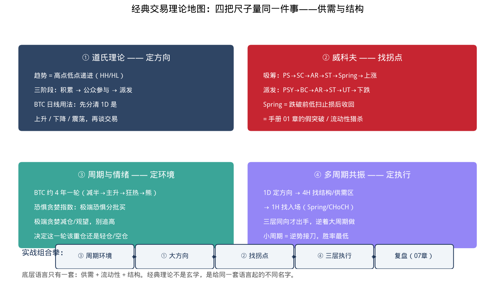
fig17 经典理论地图（道氏/威科夫/周期/MTF 怎么配合）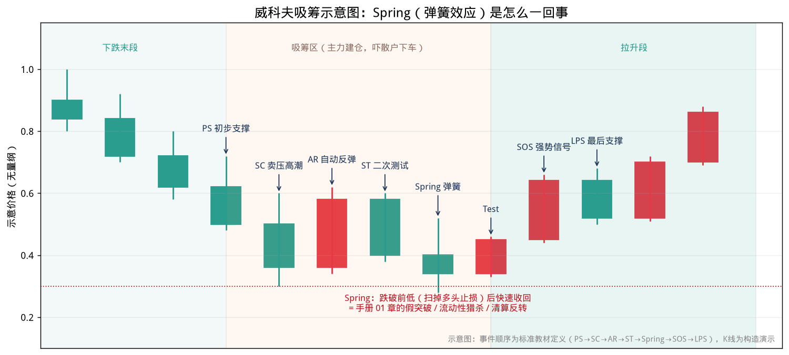
fig18 威科夫吸筹 + Spring（弹簧效应）示意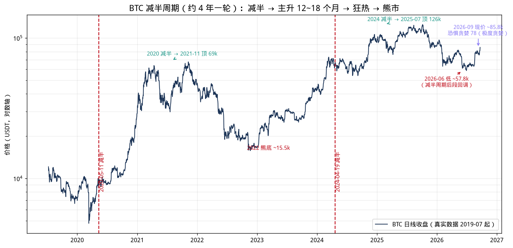
fig19 BTC 减半周期真实数据（2019-2026，两轮节奏）03 · 交易玩法流派（完整推导版）
本章解决什么问题：所有打法都号称赚钱，我该选哪个？每种打法的数学结构是什么？为什么"突破后要等回踩"？为什么马丁必死？ 目标：每个流派都讲透三件事——数学结构（为什么这样设计）、关键规则（为什么是这个数）、反面案例（不这么做会怎样）。 配套图：
fig11_money_management.png（三种资金管理曲线对比）
0. 先建立框架：任何打法 = 四个旋钮
入场逻辑 × 出场逻辑 × 仓位管理 × 时间尺度
没有"最好的打法"，只有"和你性格/时间/风险承受力匹配的打法"。而所有打法的盈亏都由同一个公式决定（04 章完整推导过）：
EV（以 R 计）= p × RR − (1−p) − 手续费
EV > 0 ⟺ p > 保本胜率 p* = (1 + 2t/s)/(1 + RR)
两种利润来源（这是理解所有流派的钥匙）：
- 高胜率小盈利：p 高（60%+）、RR 小（0.5-1.5）。风险：手续费抬门槛 + 一次大亏顶多次小赚。
- 低胜率大盈利：p 低（30-40%）、RR 大（3+）。风险：连亏很长、回撤深、心理煎熬。
每个流派就是在这两个极端之间取一个点。选流派 = 选你愿意承受哪种风险的分布。
1. 日内/超短（1m-15m）：高胜率小盈亏比
1.1 数学结构
持仓分钟-小时，止损窄（0.05-0.3%）、止盈近、靠 60-70% 胜率取胜。
为什么日内胜率看起来高：出场快，小盈利频繁落袋；但这是"看起来"——保本胜率也被手续费抬到极高（04 章 7.4 节完整推导）：
止损 0.1%、RR 1:1、taker 双边 0.154%：
p* = (1 + 0.154/0.1)/2 = 127% —— 数学上不可能赚钱
maker（双边 0.04%）：p* = (1+0.4)/2 = 70%
账（胜率 60% 照样亏）：
taker：赢 −0.054% / 输 −0.254% → EV = −0.134%/笔 → 100 笔 −13.4%
maker：赢 +0.06% / 输 −0.14% → EV = −0.02%/笔 → 100 笔 −2%（还是亏）
1.2 关键规则：日内只有 maker + 高胜率才可能活
推导：保本胜率 p = (1+2t/s)/(1+RR)。日内 s 极小 → 2t/s 巨大 → p 逼近或超过 100%。唯一出路：t 极小（maker）+ 胜率极高（>70%）+ RR 略大于 1。
边界： - 可以玩：你的交易所费率是 maker（<0.02%）、你能稳定识别高胜率形态（程序化验证过 >65%）、且你接受高频盯盘。 - 绝对不能：taker 下单做窄止损日内——手续费就吃掉你全部 edge（上面的账）。 - 变通：把止损放宽到 0.5-1%（变成波段，见 2 节），2t/s 立刻从 1.54 降到 0.15-0.31，p* 回到 50-58%。
1.3 反面案例（具体数字）
你在币安 taker 做 5m 短线，止损 0.1%、止盈 0.1%（RR 1:1），每天 20 笔，胜率 60%（已经很好了）：
每笔 EV = −0.134%（名义）
名义 2,000U/笔（保证金 20U @100x）→ 每笔 −2.68U
每天 20 笔 → −53.6U；每月 22 天 → −1,179U
保证金 20U 的仓位，一个月亏掉 5,900% 保证金（手续费 + 负期望）
胜率 60% 的"高手"，一个月稳定亏光。 这不是假设——04 章 7.4 的公式 + 这里的天数就是推导。
2. 波段（1H-4H）：均衡型，大多数人的甜蜜点
2.1 数学结构
持仓数小时-数天，止损 0.5-2%，RR 1.5-3，胜率 40-55%。
为什么这是甜蜜点：止损放宽到 1% 后，手续费占比骤降：
止损 1%、RR 1:1、taker 双边 0.154%：p* = (1+0.154)/2 = 57.7%
止损 1%、RR 1:2、taker：p* = (1+0.154)/3 = 38.5%
止损 3%、RR 1:1.55（08 章案例）：p* = 41.2%
波段让你第一次拥有"手续费可以忽略"的奢侈——p* 只比理论值 1/(1+RR) 高 1-4 个点，而不是日内那种 +27 个点。
2.2 关键规则：突破后等回踩再进（完整推导）
规则：突破前高/阻力后，不追突破，等价格回踩突破位再入场。
为什么——三段推导：
① 止损距离的账（同一笔行情，2026-09-18~21 真实数据：BTC 从 78,027 涨到 85,877，+10%）：
设突破 80,000，结构止损放突破前低 78,800，止盈 84,000：
追突破：80,200 进场
止损距离 = (80,200−78,800)/80,200 = 1.75%
盈利距离 = 84,000−80,200 = 3,800 → RR = 3,800/1,400 = 2.71
回踩：79,500 进场（同一个止损位！）
止损距离 = (79,500−78,800)/79,500 = 0.88%
盈利距离 = 84,000−79,500 = 4,500 → RR = 4,500/700 = 6.43
同样的结构止损，回踩入场让 RR 从 2.71 翻到 6.43——因为入场价更好，止损距离更短。
② 仓位的账（风险固定法，04 章 5.4：名义 = 账户×风险%÷止损距离）：
账户 10,000U、风险 1%（100U）：
追进：名义 = 100/1.75% = 5,714U → 到 84,000 盈利 = 5,714×4.74% = 271U
回踩：名义 = 100/0.88% = 11,364U → 到 84,000 盈利 = 11,364×5.66% = 643U
同样风险 1%、同样止损位、同样目标，回踩利润是追突破的 2.4 倍。
③ 风险的账：追突破还有两个隐形代价——(a) 突破瞬间滑点大（市价单吃单边）；(b) 插针假突破（08 章案例：2026-09-03 突破 79,000 插到 82,248 后跌回 80,000 下方，追突破的人买在 82,000+，之后跌到 74,910，−8.6% 且不止损就是深度套牢）。回踩入场如果插针，你还没进场（或止损更近），损失可控。
完整结论：回踩入场 = 更好的价格 → 更短的止损 → 更大的仓位（风险不变）→ 更高的 RR → 更高的 EV。这不是"感觉"，是三个公式叠出来的。
边界（什么时候可以不等回踩）： - 强势单边（如 2020-12 突破 20,000 后连续阳线）：价格可能永远不回踩，等回踩 = 踏空整段趋势。 - 解决：不是"等回踩 or 追"二选一，而是加一个确认条件——突破后回踩不破突破位（2-3 根 K 线）就进；或者突破 + 1 根收盘确认后直接进但仓位减半（风险不变、止损放宽到结构位）。 - 绝对不能追：突破后已经走了 3R 以上还在追（止损距离过大，RR < 1.5 时 EV 大概率转负，用 2.2-① 的公式验证）；以及放量插针式突破（08 章假突破案例）。
2.3 反面案例（追突破被套，真实数据）
2026-09-03，BTC 放量突破 79,000 阻力（08 章完整案例）：
14:00 大阳线 78,797 → 80,514（突破！）
21:00 插针 82,248（上方空头止损被扫）
09-04 跌破 80,000（假突破确认）
09-15 最低 74,910
追突破者：买在 82,000 附近（突破后的惯性高点），止损放 79,000 下方（宽止损 3.7%）：
账面亏损（到 09-15）= (82,000−74,910)/82,000 = 8.6%
如果按规则止损（79,000）= −3.7% 出局
如果不止损 = 扛着 −8.6% 的浮亏等回本（占用资金、心理煎熬）
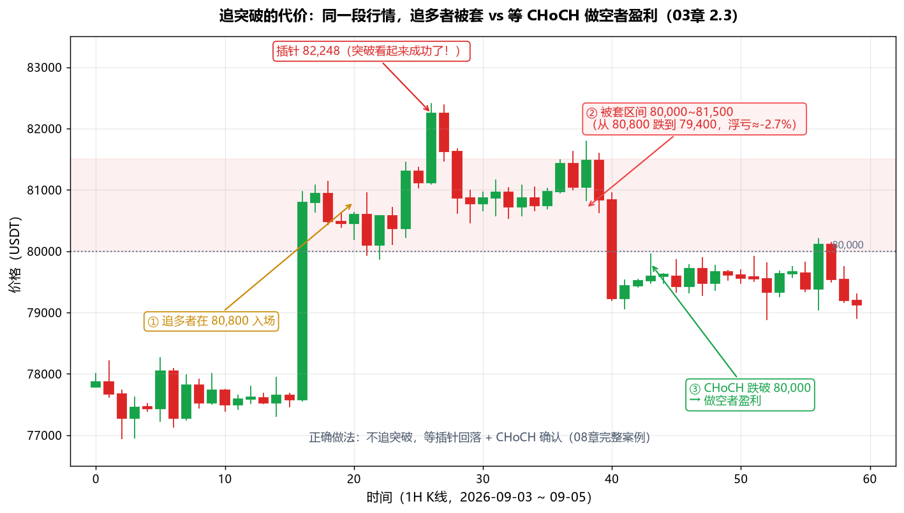
这张图是 fig29 的"对手视角"：同样一段行情，追多者在 80,800 附近追进去，冲高 82,248 后回落，跌破 80,000 时已经浮亏 ≈2.7%——如果不止损，到 09-15 的 74,910 就是 −8.6%。而等 CHoCH 确认做空的人（fig29）在同样行情里赚了 4,500 点。同一段行情，两种命运，差在入场规则。
**而等回踩的人**：等价格回踩 80,000 附近再评估——结果跌破 80,000（CHoCH），**根本不会进场**，躲过整段下跌。**这就是"等回踩"的价值：它同时帮你避开假突破。**
---
## 3. 趋势跟踪（4H-1D）：低胜率高盈亏比
### 3.1 数学结构
持仓数周-数月，胜率 30-40%，RR 3+。靠"赚 1 次 10R，亏 9 次 1R"活。
**为什么胜率必然低**：趋势信号（均线交叉、通道突破）在震荡市里大量假信号，只有少数真突破发展为趋势。这是**信号性质决定的，不是水平问题**。
**为什么还能赚钱**（期望值账）：
胜率 35%、RR 3、手续费忽略（宽止损下 2t/s < 0.05）： EV = 0.35×3 − 0.65 = +0.40R/笔 100 笔 → +40R
### 3.2 关键规则 1：盈亏比至少要 3（推导）
保本线 p* = 1/(1+RR)（忽略手续费）。趋势跟踪的胜率天花板约 40%：
RR 2 → p = 33.3%（勉强，margin 只有 6.7 个点） RR 3 → p = 25%（margin 10-15 个点） RR 5 → p* = 16.7%（margin 大，但止盈难触发）
**"趋势跟踪 RR 至少 3"不是偏好，是数学**：胜率 35% 的策略，RR 2 时 EV = 0.35×2−0.65 = +0.05R（微利，参数误差就翻负）；RR 3 时 EV = +0.40R（有真实缓冲）。
**边界**：如果你的信号胜率 >45%（程序化验证过），RR 2 也可以；如果胜率只有 30%，RR 要 4+。**先量胜率，再定 RR 下限**（公式：RR 下限 = (1−p)/(p − margin)，margin 建议 ≥0.1）。
### 3.3 关键规则 2：宽止损（ATR 1.5-2 倍）——为什么不能收窄
**直觉**：趋势跟踪的止损要过滤"正常波动"，不然会被洗出去。
**推导（用 ATR 说话）**：设 1D ATR = 3%（BTC 常态）。止损放 1×ATR（3%）会被单日波动扫掉——2019-2026 六年真实数据里，单日 high-to-low 超过 18% 的日子就有 10 天（2020-03-12 振幅 44.2%、2021-05-19 振幅 33.5% 都在列），普通日也有 2-5% 振幅。止损 < 1.5×ATR = 把"正常噪声"当"信号否定"：
假想策略：1D 趋势信号，胜率 35%，RR 3 止损 1×ATR（3%）：大量单子在趋势启动前被噪声扫掉 → 实际胜率掉到 25% 以下 → EV < 0 止损 2×ATR（6%）：噪声过滤掉，实际胜率保住 35% → EV = +0.40R
**代价**：宽止损 = 单笔亏损大 → 仓位小（风险固定法）→ 收益也小。**这是趋势跟踪的固有成本**：赚的是"少数大趋势"，亏的是"频繁小止损"。
**边界**：资金太小（<1,000U）不适合趋势跟踪——宽止损下一笔止损就是 20-60U，连亏 9 笔（p=35% 时的常态）就亏掉 50%+ 本金，心理上扛不住。
### 3.4 关键规则 3：必须承受 20-40% 回撤（连亏的数学）
**推导连亏分布**：胜率 35%，单笔连亏 5 次概率 = 0.65^5 = 11.6%。做 100 笔，至少出现一次连亏 5 的概率 ≈ 1−(1−0.116)^96 ≈ **几乎必然**（>99.99%）。
连亏 5 笔（单笔风险 2%）：0.98^5 = 90.4%（亏 9.6%） 连亏 9 笔（p=35% 时概率 = 0.65^9 = 2.1%）：0.98^9 = 83.4%（亏 16.6%） 加上期间的小赚小亏波动 → 账户 20-40% 回撤是趋势跟踪的"正常呼吸"
**结论**：选趋势跟踪前先问自己——**账户回撤 30% 时你还能按规则加仓/持仓吗？** 不能 = 别选（你会手动砍在最低点，把"低胜率大盈利"变成"低胜率大亏损"）。
### 3.5 反面案例（抄底趋势跟踪，真实数据）
2025-07 BTC 见顶 126k（本地数据），此后下跌。趋势跟踪者在 2025 年底"突破"追多或"抄底"：
2025-07 顶 126,174 → 2026-06 低 57,800（−54%） 如果 100,000 附近追多、止损 10%（宽止损趋势单）： 第一次止损：−10% 出局 ✓（趋势跟踪的正常亏损） 如果不设止损/网格硬扛（把趋势跟踪做成扛单）： 浮亏最高 −54%：10,000U 账户亏 5,400U 需要赚 (1/0.46 − 1) = 117% 才回本（04 章回撤恢复表）
**正确的趋势跟踪**：每笔止损 10%（风险 2% → 仓位 20% 名义），连亏 3 笔 = 亏 6% 本金，然后等下一个信号。**错误的"趋势跟踪"**：不止损，把 10R 的亏损扛成 50R——一次就毁掉策略的整个期望值结构（04 章 7.1 扛单账）。
---
## 4. 网格/马丁/系统化：自动策略的数学陷阱
### 4.1 网格：震荡赚钱、单边亏（推导）
**网格逻辑**：在价格区间内设等距买单/卖单，每次成交赚一个格子价差。本质是**卖波动率**：波动越大、来回穿越越多，赚得越多。
**为什么震荡赚钱**：价格在网格区间内来回 → 每次穿越都成交一对买卖 → 稳定赚价差。
**为什么单边亏**：价格一路下跌 → 只触发买单不触发卖单 → 不断买入浮亏扩大，**直到资金耗尽或价格离开网格下沿**。
**具体账（真实数据：2026-02-05 单日 −14.0%，开 73,146 → 低 62,242）**：
网格设置：73,000 起始、2% 间距、每格买 2,000U、下沿 60,000 单日下跌 −15%：触发 8 格买入（73,000→62,242，价格依次触发 73k/71.5k/70.1k/68.7k/67.3k/66k/64.7k/63.4k） 买入总额 = 8 × 2,000 = 16,000U，平均成本 ≈ 68,500（等额买入的算术平均） 当日浮亏 ≈ (68,500−62,242)/68,500 ≈ 9.1% → 约 −1,450U 如果网格没设下沿/止损，2026-06 跌到 57,800： 触发 12 格买入 24,000U，平均成本 ≈ 65,500，浮亏 ≈ 11.7% → 约 −2,800U，且 24,000U 资金全部被占
**再看 2021-04~2022-11 的极端版**：网格从 64,000 起（2021-04 附近），BTC 最终跌到 15,476（−76%）——**没有下沿的网格在单边熊市里就是无底洞**（触发 60+ 格，浮亏 50%+）。
**边界**：网格可以活，条件是——①只在**确认的震荡区间**内开（03b 章道氏：1D 无趋势）；②设**总风险上限**（最多买入金额/最大浮亏，到线平仓离场）；③不用杠杆或用低杠杆（网格 + 杠杆 = 下跌时同时爆仓，死最快）；④接受"区间被突破 = 策略失效"。
**规则："网格是震荡市工具，不是稳定收益机器"——依据就是上面的单边账。**
### 4.2 马丁格尔：数学上必死（完整推导）
**马丁逻辑**：连亏就加倍下注，赢一把把前面全赚回来。听着完美，账算完就露馅。
**推导 1：下注序列是指数**。首单 B，每次翻倍：B, 2B, 4B, …, 2^(n−1)B。连亏 n 次累计下注：
累计 = B(1 + 2 + 4 + ... + 2^(n−1)) = B(2^n − 1) 第 n 次下注 = 2^(n−1)B
**推导 2：资金约束**。本金 1,000U、首单 10U：
第 6 次连亏：累计 630U，第 7 次需要 640U > 剩余 370U → 爆 也就是说：本金 1,000U 的马丁，最多扛 6 次连亏
**推导 3：连亏 7 次有多大概率？** 单笔胜率 50%（已经很好了，实际还要扣手续费，真实胜率 <50%）：
单次连亏 7 概率 = 0.5^7 = 0.78% 做 1,000 笔出现至少一次连亏 7 的概率 ≈ 1 − (1−0.0078)^994 ≈ 99.96% ```
结论：1,000 笔内几乎必然爆仓一次。马丁没有改变每笔的期望值（还是负的/零的），它只是把亏损集中成一次爆仓。赢 100 次小钱，一次连亏 7 全还回去 + 本金归零。
推导 4：为什么马丁的"赢"是错觉。每次赢回的都是"最近一轮的本金"，净赚永远只有首单 B（10U）。而风险是 2^n 指数增长。用 10U 的期望收益，赌 640U 的爆仓风险——赔率结构是负的。
边界：没有任何建议场景。网上所有"马丁优化版"（加趋势过滤、加间隔）只是降低爆仓概率，不改变期望值结构——只要连亏序列比你的资金深度长，就爆。实测（fig13 模拟）：马丁在 100x 模拟里死得最快，归零点最早。
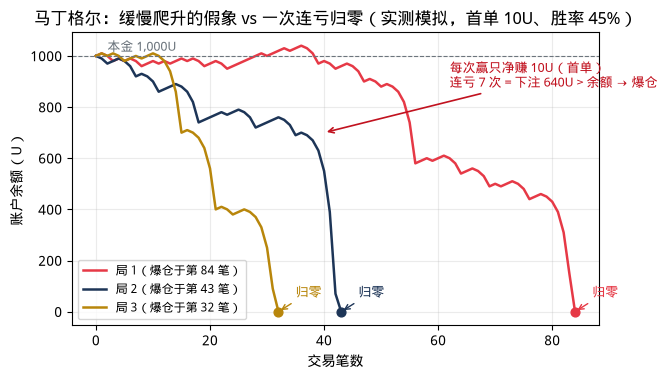
看这三条线：每局都先"稳定盈利"爬升（每次赢净赚 10U），然后某一次连亏 7 笔——下注需要 640U 超过剩余余额——直接归零。马丁不是"赢不了"，是"赢 100 次小钱、一次连亏全还回去 + 本金归零"。 这就是为什么 4.2 节的推导结论是"数学上必死"。
4.3 其他系统化（定投/网格/趋势系统）
- 定投（DCA）：唯一"不用预测方向"也长期可行的系统化（依据：BTC 长期向上 + 4 年周期，03b 章 fig19）。但必须现货、必须长周期、必须接受 50%+ 回撤（2022-11 从 69k 跌到 15.5k 时定投者账面 −77%）。
- 趋势系统：把 3 节的趋势跟踪程序化（均线/突破 + 固定止损 + 固定仓位），执行交给机器。前提：回测 200+ 笔、OOS 验证（06 章），否则只是"自动亏钱"。
5. 怎么选：决策流程（先回答 5 个问题）
- 每天能看几次盘？ 0-2 次 → 趋势跟踪/系统化；3-10 次 → 波段；全天 → 日内候选（先过手续费关）。
- 能承受多大回撤？ 30%+ → 趋势跟踪；10-20% → 波段；<10% → 只能做小仓波段或定投（回撤承受力直接决定流派，3.4 节）。
- 你的 edge 是什么？ 特别会认某个形态/某个时段/某个品种？没有 edge = 随机入场（04 章：随机入场 100x 下 136~221 笔归零）。edge 不是"感觉准"，是要能写成假设卡（06 章）并回测。
- 资金量？ <1,000U → 别碰趋势跟踪（宽止损吃本金），练波段或模拟；<100U → 先模拟 200 笔（06 章），别上真钱。
- 手续费等级？ taker 且不打算改 → 日内直接排除（1.2 节数学）；maker/低费 → 日内才有讨论资格。
决策输出：1-2 个候选流派 → 各写一张假设卡（06 章）→ 回测 200 笔 → 选 EV 为正且回撤可承受的那个 → 纸面 1 个月 → 小资金实盘。一个玩法练 100 遍，不要每周换——换打法 = 样本永远不够 = 永远不知道哪个真有效（06 章）。
6. 新手误区（展开版）
- ❌ "高胜率 = 好策略"：胜率 65% + RR 0.5 + 手续费 = 负 EV（1 节账）。胜率必须和盈亏比、手续费一起看。
- ❌ "盈亏比越高越好"：RR 5 的止盈可能永远触发不了（胜率掉到 20% → EV 还是负）。RR 要和你的真实胜率匹配（3.2 节公式）。
- ❌ "马丁 = 稳定收益"：它是"高概率小赚 + 低概率爆仓"的负赔率赌局（4.2 节推导）。
- ❌ "网格 = 无脑赚钱"：单边趋势里网格是接飞刀（4.1 节账）。
- ❌ "追突破 = 顺势"：假突破是常态（08 章案例），追突破的止损距离和滑点吃掉 RR（2.2 节）。
- ❌ "别人晒单赚钱，我也行"：晒单胜率不可验证、尺度和你不匹配、且可能是幸存者偏差（06 章）。
- ❌ "换打法 = 学习"：一个月换 3 种打法 = 每种都没到 200 笔样本 = 永远在赌。
速记卡（Anki）
- Q: 两种利润来源？ A: 高胜率小盈利（日内/波段）vs 低胜率大盈利（趋势跟踪）。
- Q: 日内 taker 为什么必死？ A: 止损 0.1% 时手续费 = 1.54 倍止损，保本胜率 127%（不可能）。
- Q: 为什么突破后等回踩？ A: 同结构止损下回踩入场止损更短、仓位更大、RR 更高（账：RR 2.71→6.43，利润 ×2.4）。
- Q: 回踩的代价？ A: 可能不回来（踏空）；强势单边用"突破确认"替代。
- Q: 趋势跟踪 RR 至少多少？ A: 3（胜率 35% 时 EV 才有缓冲）；先量胜率再定 RR 下限。
- Q: 趋势跟踪回撤多大正常？ A: 20-40%（连亏 5 次概率 11.6%，几乎必然发生）。
- Q: 网格什么时候亏？ A: 单边趋势——一路触发买单无卖单，浮亏扩大（2026-02-05 单日 −7.4% 浮亏账）。
- Q: 马丁为什么必死？ A: 下注指数增长 2^n，本金 1,000 首单 10 只扛 6 次连亏；连亏 7 次概率 0.78%，1,000 笔内几乎必然出现。
- Q: 选流派的 5 问？ A: 盯盘时间/回撤承受/edge/资金量/手续费。
思考题（先自己想，答案在末尾）
- 你的策略真实胜率 45%、RR 2、taker 双边 0.154%、止损 1.5%：EV 是多少 R？（用 p* 和 EV 公式）
- 2026-09-18~21 那波上涨（78,027→85,877），如果突破 80,000 追进（止损 78,800），RR 是多少？回踩 79,500 进（同止损）呢？（2.2 节）
- 本金 500U、马丁首单 5U：能扛几次连亏？连亏这么多笔的概率（胜率 45%）？（4.2 节）4. 你只有每晚 30 分钟看盘，手续费是 taker：应该排除哪两个流派？为什么？
- "趋势跟踪胜率 30% 很烂"——用 EV 反驳或支持这个说法（给数字）。
参考答案
1. p* = (1 + 0.154/1.5)/3 = (1+0.1027)/3 = 36.8%。你的胜率 45% > 36.8% → EV = 0.45×2 − 0.55 − 手续费项 ≈ +0.35R/笔（正）。 2. 追进：止损 1.75%、RR = 3800/1400 = 2.71；回踩：止损 0.88%、RR = 4500/700 = 6.43。同样风险 1% 下利润差 2.4 倍。 3. 累计 = 5(2^n−1) ≤ 500 → 2^n ≤ 101 → n = 6（第 6 次连亏后累计 315U，剩余 185U，第 7 次需要 320U → 爆）。连亏 7 次概率 = 0.55^7 = 1.5%；做 1,000 笔出现概率 ≈ 1−(1−0.015)^994 ≈ 99.99%。 4. 排除日内（盯盘不够）和 taker 高频（1.2 节数学必死）。剩下波段/趋势跟踪/系统化。 5. 支持"不烂"：EV = 0.30×RR − 0.70。RR 3 → EV = +0.20R；RR 5 → +0.80R。**胜率 30% 只要 RR 足够大就是正期望**——前提是你承受得了 3.4 节说的回撤。新手最常踩的坑
- [ ] 我是不是在模仿一个我根本没条件复制的打法（盯盘时间/资金量/手续费级别）？
- [ ] 我有没有给每个候选玩法算过 EV 和保本胜率？
- [ ] 我追突破前，算过止损距离和 RR 吗？（没算 = 别追，先等回踩）
- [ ] 我是不是一个月换了 3 种打法？（是 = 每种都没到 200 笔样本）
- [ ] 我有没有认真回答过"我的 edge 是什么"？（答不出 = 随机入场）
📊 本章配图（大图 / 全景，可点击放大）
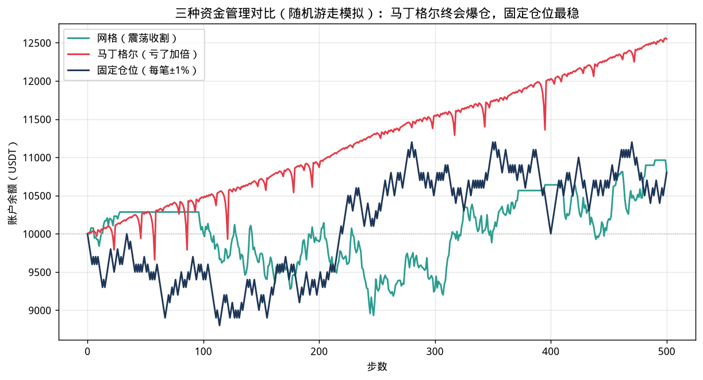
fig11 网格 vs 马丁 vs 固定仓位资金曲线04 · 盈亏比 · 仓位 · 杠杆 · 期望值（完整推导版）
本章解决什么问题：为什么你"胜率 60%"还在亏钱？为什么"不会爆仓"的账户还是归零了？为什么单笔风险不能超过 2%？ 这章是整本手册的心脏：每一个规则都能从公式推导出来，推导不出来的一律标注为"经验值+依据"。 配套图：
fig05_breakeven_winrate.png、fig06_liquidation_distance.png、fig07_fee_vs_leverage.png、fig08_compounding.png、fig09_drawdown_recovery.png、fig10_expectancy_heatmap.png、fig13_100x_random_sim.png
0. 全章地图：这章回答四个问题
| 问题 | 对应章节 | 核心公式 |
|---|---|---|
| 我的打法长期是赚是亏？ | 1-2 节 | 期望值 EV = p·W − q·L − f |
| 手续费/盈亏比要求我至少赢多少？ | 2 节 | 保本胜率 p* = (1+2t/s) ÷ (1+RR) |
| 每笔最多下多少注？ | 3-4 节 | 凯利 f* = (bp−q)/b，再打折到 1-2% |
| 我的单子离归零多远？ | 5 节 | 爆仓距离 = 1/杠杆 − 维持保证金率 − 费率 |
阅读承诺：下面每个"为什么"都会给推导。凡是给不出推导的，我会明确写"这是经验值，依据是……"。
1. 期望值：完整推导（EV 是唯一判官）
1.1 从单笔交易的"分布"推导
把一笔交易的结果看成随机变量 X。它只有两种结果（先忽略手续费和滑点）：
- 盈利 W，发生的概率 p（你的真实胜率）
- 亏损 L，发生的概率 q = 1 − p
数学期望的定义：把所有可能结果按概率加权平均：
E[X] = p × W + q × (−L) = pW − qL
为什么"平均"有意义：大数定律说——独立重复 N 笔，N 笔的平均结果会收敛到 E[X]。N 越大，实际平均越接近期望值。所以 EV 是"你长期每笔平均能赚多少"，和单笔运气无关。
加回成本：每笔还要付手续费 f（开仓+平仓），无论赢亏都付：
EV = p(W − f) + q(−L − f) = pW − qL − f
实例：胜率 40%、平均盈利 600U、平均亏损 300U、每笔手续费 20U：
EV = 0.4×600 − 0.6×300 − 20 = 240 − 180 − 20 = +40U/笔
每 100 笔期望 +4,000U——但注意：这不是"每 100 笔一定赚 4,000"，而是长期平均。100 笔的波动（标准差）大约 √100 × 单笔波动，所以 100 笔的实际结果可能在 ±几千 U 范围。样本越少，运气成分越大——这就是 06 章"至少 200 笔"的数学根源。
1.2 用 R（风险单位）简化：为什么胜率不是一切
设每笔亏损 = 1R（你的止损金额），盈利 = RR×1R（RR 是盈亏比）。忽略手续费：
EV（以 R 计）= p×RR − (1−p)×1 = p(RR+1) − 1
EV > 0 的条件：p > 1/(1+RR)。
画成表（这就是 fig05 的横线）：
| 盈亏比 RR | 保本胜率 1/(1+RR) | 说明 |
|---|---|---|
| 1:0.5 | 66.7% | 小止盈，需要极高胜率 |
| 1:1 | 50% | 五五开 |
| 1:2 | 33.3% | 典型波段 |
| 1:3 | 25% | 典型趋势跟踪 |
| 1:5 | 16.7% | 宽止损趋势 |
这就是"盈亏比至少 2:1"这个经验法则的来源（依据在后面 2.2 节完整推导）：大多数裸K/技术信号的真实胜率落在 30-55% 区间（本手册 SMC 回测：趋势信号 30-40%、入场信号 40-55%），要 p > 1/(1+RR) 成立，RR 至少要在 1.5-3 之间。RR 1:1 需要 50% 胜率——不是不可能，但你的真实胜率必须稳定超过 50%，且手续费还要再抬高门槛（下一节）。
反例数字：胜率 65%、RR 0.5、每笔手续费 0.15R（高频小止盈常见结构）：
EV = 0.65×0.5 − 0.35×1 − 0.15 = 0.325 − 0.35 − 0.15 = −0.175R/笔（亏！）
胜率 65% 照样亏——"命中率游戏"是错觉，EV 才是判官。
2. 保本胜率：手续费如何抬高门槛（完整推导）
2.1 推导过程
设：止损距离 = s（占名义价值的比例，如 0.3%），盈亏比 = RR（止盈距离/止损距离），双边手续费率 = 2t（taker 约 0.154%，maker 约 0.04%）。
每笔结果（按名义价值的比例）：
- 赢：+RR×s − 2t
- 输：−s − 2t
令 EV = 0（保本），求胜率 p：
p(RR×s − 2t) − (1−p)(s + 2t) = 0
p·RR·s − 2pt − s − 2t + ps + 2pt = 0
p·s(RR + 1) = s + 2t
p* = (s + 2t) / (s(RR+1)) = (1 + 2t/s) / (1 + RR)
关键洞察：保本胜率由三件事决定——手续费占止损的比例（2t/s）、盈亏比（RR）。止损越窄，2t/s 越大，保本胜率被抬得越高。
2.2 数字验证（真实参数）
taker 双边 0.154%，止损 0.3%（100x 下常见窄止损）：
2t/s = 0.154% / 0.3% = 0.513
RR 1:1 → p* = 1.513/2 = 75.7%
RR 1:3 → p* = 1.513/4 = 37.8%
RR 1:5 → p* = 1.513/6 = 25.2%
对比 BTC 5m 随机入场实测胜率：RR1:1 ≈ 47.7%、RR1:3 ≈ 23.9%——全部低于保本线。这就是"随机入场必死"的数学：不是输在方向，是输在手续费抬高的门槛。
所以"盈亏比至少 2:1"的完整推导是：
- 先有真实胜率分布：技术信号普遍 30-55%（依据：本手册 SMC 回测 + 行业文献惯例）；
- 保本线 p* = (1+2t/s)/(1+RR)，手续费再往上抬；
- 要 p > p：RR = 1 时要求 p 在 50%+（手续费后更高），只有极少数人有稳定 >55% 的胜率；RR = 2 时 p* ≈ 33-38%，落在大多数策略的胜率区间内。
- 结论：RR ≥ 2 是"让大多数策略从数学上可能赚钱"的最小要求——这是经验法则，依据就是上面这条推导链。
边界（什么时候可以 RR < 2）： - 你的策略真实胜率稳定 > 60% 且手续费占比低（maker）→ RR 1:1 可能正 EV； - 高频小止损 + taker → 数学上基本无解（见 3 节日内账）； - 趋势跟踪 → RR 至少要 3，因为胜率只有 30-40%。
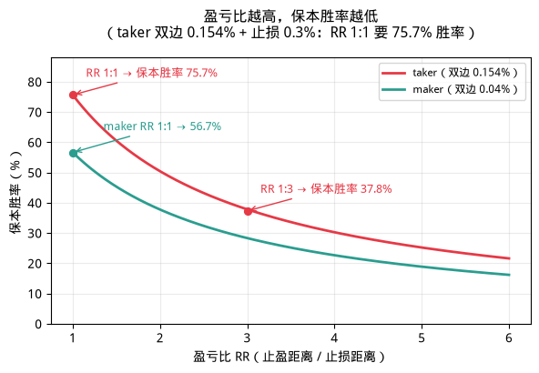
看这条红色曲线：taker + 0.3% 窄止损，RR 1:1 需要 75.7% 的胜率才保本；把盈亏比拉到 1:3，门槛降到 37.8%。公式推导见 2.1，这张图是公式的直观形状——盈亏比是你唯一能主动抬高的杠杆。
2.3 手续费占保证金：杠杆是放大镜，成本也被放大（完整账）
手续费按名义价值收。名义 = 保证金 × 杠杆：
每笔手续费 = 名义 × 双边费率 = 保证金 × 杠杆 × 0.154%
100x 时 = 保证金的 15.4%（每开平一次）
算账：100x、保证金 1,000U、止损 1R = 名义 0.3% = 300U。一次开平： - 手续费 = 100,000 × 0.154% = 154U = 保证金的 15.4% - 1R 止损 = 300U = 保证金的 30% - 手续费 ≈ 0.51 个 R：你每笔的实际成本是 1R 止损 + 0.51R 手续费。
这意味着：即使你"猜对方向"（赢 1R），扣掉手续费后净赚只有 0.49R；而输 1R 时实际亏 1.51R。胜率 60% 也救不回来（60%×0.49 − 40%×1.51 = 0.294 − 0.604 = −0.31R/笔）。
3. 凯利公式：完整推导，以及为什么"单笔风险 1-2%"
3.1 推导（对数财富最大化）
问题：胜率 p、净赔率 b（盈亏比 RR）的游戏，每次下注本金的 f 比例，长期怎么下注增长最快？
先排除错误目标：如果目标是"每笔平均收益最大"，答案是 100% 全押——但全押连亏一次就归零。凯利的洞见是：目标是最大化长期复利增长率 g = E[ln(1+r)]，其中 r 是每笔的资金变化率。
单笔结果： - 赢：资金 ×(1 + b·f) - 亏：资金 ×(1 − f)
对数期望（为什么用 ln：因为 N 笔后的资金 = 本金 × ∏(1+ri)，取对数后变成求和，N 笔平均对数增长 = E[ln(1+r)]，大数定律适用）：
g(f) = p·ln(1 + bf) + q·ln(1 − f)
对 f 求导，令导数为 0（求最大值）：
dg/df = p·b/(1+bf) − q/(1−f) = 0
p·b·(1−f) = q·(1+bf)
pb − pbf = q + qbf
pb − q = f·(pb + qb) = f·b·(p+q) = f·b
f* = (pb − q)/b = (bp − q)/b
每一项的含义： - b：净赔率 = 赢时赚几个 R（盈亏比）。注意 b 是"每下注 1 单位本金赢多少"，不是"价格涨多少"； - p：真实胜率； - q = 1−p：败率； - 分子 bp − q：每下注 1 单位本金的"期望净赚"（以 R 计）； - 分母 b：把"赚几个 R"换算成"下注比例"。
直觉：f 是"让长期对数增长最快"的下注比例。下注低于 f：增长慢但稳；下注高于 f：增长反而变慢（波动吃掉复利）；下注 = 2f：长期增长率归零；再高：长期必亏。
3.2 数值例子（算给你看）
| 胜率 p | 盈亏比 b | f* = (bp−q)/b | 含义 |
|---|---|---|---|
| 55% | 1.5 | (0.825−0.45)/1.5 = 25% | 不错但激进 |
| 30% | 3.0 | (0.9−0.7)/3 = 6.7% | 趋势跟踪典型 |
| 40% | 2.0 | (0.8−0.6)/2 = 10% | 波段典型 |
| 60% | 1.0 | (0.6−0.4)/1 = 20% | 高胜率小赔率 |
| 40% | 1.0 | (0.4−0.6)/1 = −20% | 负值 = 不该玩 |
最后一行最重要：凯利算出负值 = 这个赔率结构下任何仓位都是负期望，该做的是停止交易，不是找仓位。
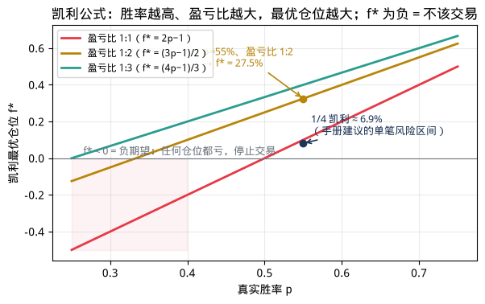
看三条曲线的斜率：盈亏比越大，曲线越陡——同样的胜率 55%，1:1 只敢下 10%，1:2 能下 27.5%（1/4 凯利 ≈ 6.9%，正好落进手册建议的单笔风险 1-2% 区间）。凯利给的是"上限"不是"目标"：p、b 是估计值，全仓凯利 = 用真实误差赌数学理想。
3.3 为什么不能全仓凯利（这是"单笔风险 1-2%"的完整推导）
凯利公式假设 p 和 b 精确已知。现实中它们只是估计值，误差是结构性的：
① 参数误差是灾难性的。设真实胜率 55%、b=1.5，你估计成 60%：
f*(真实55%) = 25%，f*(估计60%) = (0.9−0.4)/1.5 = 33.3%
你以为自己在 25%，实际下注 33.3%——超过了 2f* 的一半，长期增长已经显著受损。更极端：真实胜率掉到 50%（只是少 5 个点），f = 0——全凯利 = 站在悬崖边，参数一偏就翻车*。
② 连亏路径（用具体账证明）。凯利只保证"长期"，不保证"短期不死"。设你按 25% 下注，连亏 5 笔：
0.75^5 = 23.7%——账户亏掉 76%
连亏 5 笔的概率（胜率 55%）：q^5 = 0.45^5 ≈ 1.85%。听着小，但 1,000 笔交易里至少出现一次连亏 5 笔的概率 ≈ 1 − (1−0.0185)^996 ≈ 接近 100%（实际约 99.99%+）。连亏必然发生，只是早晚问题。全凯利下，一次连亏序列就把你打回解放前。
③ 实践折中：1/4 凯利（quarter-Kelly）。把 f* 除以 4，增长只损失约 25%，但回撤大幅缩小：
典型策略 f* = 6.7%~25% → 1/4 凯利 = 1.7%~6.25%
再取保守区间（参数误差 + 心理承受 + 连亏缓冲）→ 单笔风险 1-2%
结论（本手册规则，附依据）："单笔风险不超过 2%" = 1/4 凯利（对典型策略）+ 参数误差缓冲 + 连亏缓冲的经验值。依据：①凯利推导（3.1）；②参数敏感性（3.3-①）；③连亏路径账（3.3-②）；④专业资金管理惯例（如《专业投机原理》《通向财务自由之路》均建议 1-2% 风险）。
边界： - 可以临时超过 2%：①小账户（<1,000U）当"学费"，输光不影响生活；②你有程序化验证过的高置信 edge（比如回测 1,000 笔、OOS 稳定），可以到 2-3%（仍是 1/4 凯利以内）。 - 绝对不能超过：①这笔钱是你的生活费/应急金；②连续亏损后想"加倍赚回来"（报复性交易——此时你的 p 估计已经失真，实际风险是标称的 2-3 倍）；③你无法在 30 秒内说出这笔的 EV 和保本胜率。
3.4 连亏账（不这么做会怎样——把数字贴脸上）
设单笔风险 = R%（每笔最多亏账户的 R%）。连亏 10 笔后账户剩余：
R = 1%: 0.99^10 = 90.4%（亏 9.6%）
R = 2%: 0.98^10 = 81.7%（亏 18.3%）
R = 5%: 0.95^10 = 59.9%（亏 40.1%）
R = 10%: 0.90^10 = 34.9%（亏 65.1%）
R = 20%: 0.80^10 = 10.7%（亏 89.3%）
关键问题：连亏 10 笔有多常见？ 胜率 50% 时，单次连亏 10 笔的概率 = 0.5^10 ≈ 0.1%。但你不是只做 10 笔——做 1,000 笔时，至少出现一次连亏 10 笔的概率 ≈ 1 − (1−0.001)^991 ≈ 63%。连亏 10 笔对任何活着的账户都是迟早的事。
配合回撤恢复表（下节 4.2），你会看到：亏 40% 需要赚 67% 才回本；亏 65% 需要赚 186%——连亏 10 次 + 5% 风险 = 需要连续赢 67% 才能回到起点。这就是为什么 1-2% 不是胆小，是数学。
4. 复利：为什么是指数不是线性（完整推导）
4.1 推导
设每笔资金变化率 r（盈利为正、亏损为负，按当前本金百分比计）。N 笔后：
资金_N = 本金 × (1+r_1)(1+r_2)···(1+r_N)
因为每笔的盈亏都作用在"当前本金"上——赚了 1% 后，下一个 1% 是在更大的基数上算的。这就是利滚利。
为什么是指数：固定 r 时，资金_N = 本金 × (1+r)^N，这是指数函数。对比"线性"的直觉：很多人以为 100 笔 × 1% = 100%。实际：
(1.01)^100 = 2.705 → +170.5%，不是 +100%
泰勒展开解释：ln(1+r) ≈ r − r²/2（r 小时）。所以：
ln(资金_N/本金) = N·ln(1+r) ≈ N·r
资金_N/本金 ≈ e^(N·r)
r = 1%、N = 100 → e^1 ≈ 2.72（精确值 2.705 ✓）。指数来自"盈利也在产生盈利"。
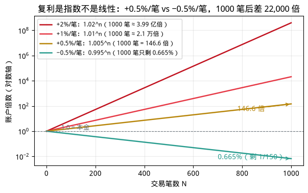
看这条金色曲线和绿色曲线的剪刀差：同样的 ±0.5% 单笔盈亏率，1000 笔后一个是 146.6 倍、一个只剩 0.665%。复利不是"慢慢变多"，是指数级分叉——所以 4.2 节才会说"保住本金 = 保住指数的底"。
4.2 指数是把双刃剑（数字账）
+0.5%/笔 × 1000 笔 = 1.005^1000 = 146.6 倍
−0.5%/笔 × 1000 笔 = 0.995^1000 = 0.7%（亏 99.3%！）
正 EV + 时间 = 指数增长；负 EV + 时间 = 指数衰减，不是线性衰减。很多人算"每笔亏 0.5%，1000 笔亏 500% 封顶"——错，是亏掉 99.3%，因为每次都是相对当前本金亏。
回撤恢复不对称表（fig09）：
| 回撤 | 需要赚回 |
|---|---|
| 10% | 11.1% |
| 20% | 25.0% |
| 30% | 42.9% |
| 40% | 66.7% |
| 50% | 100.0% |
| 60% | 150.0% |
| 80% | 400.0% |
| 90% | 900.0% |
推导：亏 d% 后剩 (1−d)，要回到 1 需要涨 x：(1−d)(1+x) = 1 → x = 1/(1−d) − 1。
结论：控制回撤比追求收益更优先。亏 50% 后你需要翻倍才能回本——而翻倍需要 +0.5%/笔 × 139 笔（1.005^139 ≈ 2.0）。一次深回撤 = 抹掉你几个月的盈利。这就是"先不亏，再赚"的数学根据。
5. 爆仓价：从维持保证金率一步步推出来
5.1 逐仓（isolated）推导
先明确逐仓模式：每笔仓位用独立保证金 M，爆仓只影响这一笔。
定义： - 名义价值 N（你控制的资产总额） - 杠杆 L：M = N/L（初始保证金） - 维持保证金率 mmr（交易所规定，BTC 永续常见 0.4%） - 强平条件：账户权益（保证金 + 未实现盈亏）≤ 维持保证金（权益跌破维持线，交易所强平防止穿仓）
做多，价格下跌 P（占名义的比例）时：
未实现盈亏 = −N·P
权益 = M − N·P = N/L − N·P
强平条件：N/L − N·P ≤ N·mmr
P ≥ 1/L − mmr
再扣开仓时已付的手续费（近似从 P 里减掉），加上平仓预估费：
P_爆仓 ≈ 1/L − mmr − 双边手续费率
数字表（mmr = 0.4%，双边费 0.154%）：
| 杠杆 | 1/L | 爆仓距离 |
|---|---|---|
| 3x | 33.3% | 32.9% |
| 5x | 20.0% | 19.5% |
| 10x | 10.0% | 9.5% |
| 25x | 4.0% | 3.5% |
| 50x | 2.0% | 1.5% |
| 100x | 1.0% | 0.52% |
100x 满仓意味着什么：BTC 从 100,000 跌 0.52% = 跌 520 美元，你就爆仓了。一根普通 5m K 线的波动都不止 0.52%。"满仓 100x"不是交易，是自杀预约。
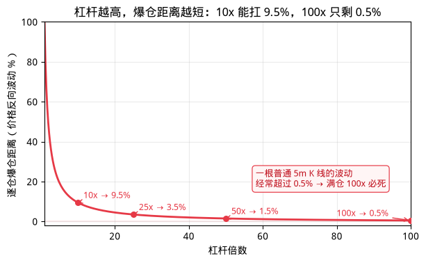
看这条曲线的陡峭度：前 25 倍杠杆每加 1 倍，爆仓距离就缩短一大截；过了 50x 基本贴着地面。公式推导见 5.1，这张图是它的形状——杠杆越往后加，边际"死亡加速度"越大。
5.2 全仓（cross）推导
全仓模式：账户所有余额共用保证金，强平影响整个账户。
- 账户总权益 E（全部余额）
- 所有仓位总名义 N_total
- 强平条件：E − 亏损 ≤ N_total × mmr
亏损距离 = (E − N_total × mmr) / N_total
例：账户 10,000U，5% 保证金（500U）× 100x = 50,000U 名义，mmr 0.4%：
维持保证金 = 50,000 × 0.4% = 200U
爆仓距离 = (10,000 − 200) / 50,000 = 19.6%
为什么全仓"抗揍"：其余 95% 的余额（9,500U）都是缓冲垫。但全仓 ≠ 安全：19.6% 只是"不爆仓"，期望值为负照样归零——fig13 实测：100x 全仓 5% 仓 + 随机入场，136~221 笔归零，死因是手续费+胜率不足，不是爆仓。
5.3 真实行情验证（反面案例，2021-05-19 真实数据）
2021-05-19，BTC 从开盘 42,874 跌到最低 28,986，单日 high-to-low −33.5%（真实数据）。
假设你在这天开盘做多：
- 100x 满仓：爆仓距离 0.52%。价格只要跌到 42,874×0.9948 = 42,651（跌 223 美元）你就爆了——开盘后第一根小 K 线就死。
- 25x 满仓：爆仓距离 3.5%。跌到 41,374 爆仓——也是几分钟的事。
- 10x 满仓：爆仓距离 9.5%。跌到 38,800 爆仓——当天最低 28,986，必爆。
- 5x 满仓：爆仓距离 19.5%。跌到 34,517 爆仓——还是低于当天最低点，必爆。
- 3x 满仓：爆仓距离 32.9%。跌到 28,770 爆——当天最低 28,986，差 216 美元就爆。
结论：2021-05-19 这种日子，任何 ≥3x 的满仓都活不过当天。这就是"杠杆和止损距离匹配"规则的由来（08 章案例：3.65% 止损配 10x 都不安全，实际用 10x 是因为止损 3.65% < 爆仓距离 9.5%，留了余量）。
规则：爆仓距离必须 > 止损距离，且至少留 2 倍余量（依据：极端行情 high-to-low 可到 33.5%，普通止损 1-3% 只是"正常"波动，极端日波动是它的 10 倍以上）。
5.4 仓位公式：风险固定法（止损距离定仓位）
规则：仓位大小由"最多亏多少"决定，不由"想赚多少"决定。 推导：
最大亏损 = 名义 × 止损距离
要求：最大亏损 = 账户 × 风险比例（1-2%）
→ 名义 = 账户 × 风险比例 ÷ 止损距离
保证金 = 名义 ÷ 杠杆
实例：账户 10,000U，止损 0.3%，风险 1%：
名义 = 10,000 × 1% ÷ 0.3% = 33,333U（33 倍账户！）
保证金（10x）= 3,333U
最大亏损 = 33,333 × 0.3% = 100U = 账户 1% ✓
为什么止损越窄仓位越大：风险固定，止损窄 = 每单位名义的亏损小，所以能开更多名义。这是"窄止损高仓位、宽止损低仓位"的数学根据——不是鼓励窄止损，而是让"风险"这个变量保持恒定。
和凯利的关系：凯利 f* 也是"亏损比例"的单位。把凯利换成仓位：
名义 = 账户 × (凯利 f* ÷ 止损距离)
例：f = 6.7%（1/4 凯利 1.7%）、止损 3.65% → 名义 = 10,000 × 1.7% ÷ 3.65% = 4,658U，保证金（10x）= 466U。风险固定法其实就是"用凯利当风险比例"的另一种写法。*
6. 杠杆与止损匹配：完整规则
6.1 规则推导
设你的止损距离 = s（结构止损，08 章）。要保证"先止损、后爆仓"：
爆仓距离 ≥ s × 安全余量（建议 2 倍）
1/L − mmr − fee ≥ 2s
L ≤ 1 / (2s + mmr + fee)
数字表（mmr = 0.4%，fee 双边 0.154%）：
| 止损距离 s | 杠杆上限 L ≤ 1/(2s+0.0055) | 取整 |
|---|---|---|
| 0.5% | 1/(0.0155) = 64.5x | 50x |
| 1.0% | 1/(0.0255) = 39.2x | 25x |
| 2.0% | 1/(0.0455) = 22.0x | 20x |
| 3.0% | 1/(0.0655) = 15.3x | 10x |
| 3.65%（08 章案例） | 1/(0.0785) = 12.7x | 10x |
| 5.0% | 1/(0.1055) = 9.5x | 5x |
08 章案例验证：止损 3.65%、10x → 爆仓距离 9.5% = 2.6 倍止损，在 2 倍余量线上 ✓。若用 25x（爆仓 3.5% < 止损 3.65%），价格没到止损先爆仓——杠杆不是越高越"能扛"，是越高死得越早。
6.2 为什么需要 2 倍余量（极端行情账）
2021-05-19 那天 high-to-low −33.5%。如果你的止损 3.65% 但爆仓距离只有 4%，价格在触发止损前可能直接跳空击穿爆仓价（流动性枯竭时价格不连续，5.3 节 3x 差 216 美元就爆）。2 倍余量是把"跳空、插针、流动性真空"算进去的安全垫（依据：真实极端日数据 + 交易所强平机制会在权益不足时强制市价平仓，插针时成交价可能远离标记价）。
7. 反面案例合集（真实行情，数字算给你看）
7.1 扛单 vs 止损（2021-05-19 真实数据）
账户 10,000U，2021-05-19 开盘 42,874 做多（满仓现货 10,000U ≈ 0.233 BTC，因为账户只有 10,000U，买不起 1 BTC）：
做法 A：设 5% 止损（42,730）
亏损 = 10,000 × 5% = 500U（账户 −5%）
出场后保住 9,500U，2021-07 在 29,250 可以更低位再入场
做法 B：不设止损，扛单
扛到 2021-07-20 低点 29,250：亏损 = 10,000 × 31.8% = 3,180U（账户 −31.8%）
扛到 2022-11-21 低点 15,476：亏损 = 10,000 × 63.9% = 6,390U（账户 −63.9%）
结论：扛单不是"扛一下"，是把最大亏损从可控变成不可控。设了止损，最坏情况你知道（−5%）；不设止损，最坏情况由市场决定——2021-05-19 证明市场可以一天给你 −33.5%，还可以再跌一年。同样一笔单，止损 vs 扛单的差距是 500U vs 6,390U（12.8 倍），而你要多赚 177% 才能把 6,390U 赚回来（04 章回撤恢复表）。
扛单的期望值推导：设止损的 EV（RR 1:1，胜率 50%，忽略手续费）= 0；无止损时，你"扛回来"的单子其实是在用更大的平均亏损换回胜率虚高——亏损分布变成肥尾（大多数小亏 + 少数巨亏），期望值通常更差，因为巨亏发生的概率比你想象的高（2019-2026 六年真实数据里，单日 high-to-low −20% 以上的日子至少 7 天，其中 2021-05-19 一天 −33.5%）。
边界：严格说，"扛单"没有适用场景。但现货定投/网格不是扛单——它们有明确的资金规划（每期固定金额、无杠杆、长期时间框架），是另一套策略。带杠杆扛单 = 把止损交给爆仓引擎，必死。
7.2 100x 满仓（2020-03-12 真实数据）
2020-03-12 新冠崩盘：开盘 7,934，收盘 4,787（−39.7%），最低 4,439（high-to-low −44.2%）。
100x 满仓做多：爆仓距离 0.52%——开盘 7,934 跌到 7,893（跌 41 美元）就爆仓。即使你"判断对了"（那天之后 2021 年涨到 69k），你也活不到。这是"100x 满仓 = 自杀预约"最极端的一次实锤。
7.3 单笔风险 5% vs 1%（连亏 10 笔账，3.4 节已推导）
1% 风险：连亏 10 笔剩 90.4%，需赚 10.6% 回本
5% 风险：连亏 10 笔剩 59.9%，需赚 67% 回本
10% 风险：连亏 10 笔剩 34.9%，需赚 186% 回本
20% 风险：连亏 10 笔剩 10.7%，需赚 831% 回本
"连亏 10 笔"不是黑天鹅：胜率 50% 下做 1,000 笔，出现至少一次连亏 10 的概率 ≈ 63%。你用 5% 风险，就等于签了一份"迟早亏 40%+"的合同。
7.4 日内 taker 手续费账（为什么高频 taker 必死）
止损 0.1%、RR 1:1、胜率 60%（很高的胜率）、每笔双边 taker 0.154%：
赢 = +0.1% − 0.154% = −0.054%（手续费比止盈还大！）
输 = −0.1% − 0.154% = −0.254%
EV = 0.6×(−0.054%) − 0.4×(−0.254%) = −0.0324% − 0.1016% = −0.134%/笔
100 笔 → −13.4%（按名义）——胜率 60% 照样稳定亏损
保本胜率 = (1 + 0.154/0.1)/2 = 127%——数学上不可能
换 maker（0.04% 双边）：
赢 = +0.06%，输 = −0.14%
EV = 0.6×0.06% − 0.4×0.14% = −0.02%/笔——还是亏！
保本胜率 = (1 + 0.04/0.1)/2 = 70%
结论：止损 0.1% 的日内打法，maker 都要 70% 胜率才保本，taker 直接 127%（不可能）。窄止损 = 只有 maker 且极高胜率才活得下去。这就是 03 章"日内玩法必须手续费极低"的完整推导。
速记卡（Anki）
- Q: 期望值公式？ A: EV = p×W − q×L − f；EV>0 长期必赚，EV<0 长期必亏。
- Q: 保本胜率公式？ A: p* = (1 + 2t/s) ÷ (1+RR)。止损越窄、手续费越高，门槛越高。
- Q: 凯利公式？ A: f* = (bp−q)/b，最大化长期对数增长；假设参数精确，实际只用 1/4。
- Q: 为什么单笔风险 1-2%？ A: 典型策略 1/4 凯利 ≈ 1.7-6.25%，再留参数误差和连亏缓冲，取 1-2%。
- Q: 连亏 10 笔（5% 风险）会怎样？ A: 剩 59.9%，需赚 67% 回本；1% 风险剩 90.4%。
- Q: 复利为什么是指数？ A: 每笔盈亏作用在当前本金，(1+r)^N；正 EV+时间=指数增长，负 EV=指数衰减。
- Q: 亏 50% 要赚多少回本？ A: 100%。
- Q: 逐仓爆仓距离？ A: 1/杠杆 − mmr − fee；100x 满仓 ≈ 0.52%。
- Q: 杠杆与止损匹配规则？ A: 爆仓距离 ≥ 2×止损距离；L ≤ 1/(2s+0.0055)。
- Q: 仓位公式？ A: 名义 = 账户×风险% ÷ 止损距离；保证金 = 名义÷杠杆。
- Q: 2021-05-19 单日振幅？ A: high-to-low −33.5%，任何 ≥3x 满仓都爆。
思考题（纸笔做，做完对答案）
- 胜率 40%、均盈 600U、均亏 300U、每笔手续费 20U：EV？每 100 笔期望多少？（1.1 节）
- 止损 0.4%、RR 1:2、taker 双边 0.154%：保本胜率？（2.1 节）
- 你的策略胜率 55%、RR 2：凯利 f* 是多少？1/4 凯利是多少？如果真实胜率其实是 50%，用全凯利会怎样？（3.2-3.3 节）
- 现价 60,000，25x 满仓做多，mmr 0.4%、taker 0.077%：爆仓价？（5.1 节）
- 账户 8,000U，止损 2%、风险 1.5%：名义？保证金（10x）？最大亏损？（5.4 节）
- 止损 2% 的单子，杠杆上限是多少（2 倍余量）？（6.1 节）
- 证明：单笔风险 10%，连亏 10 笔后需要赚多少 % 才能回本？（3.4 + 4.2 节）
参考答案
1. EV = 0.4×600 − 0.6×300 − 20 = +40U/笔；100 笔期望 +4,000U（注意波动，不是保证）。 2. p* = (1 + 0.154%/0.4%) ÷ (1+2) = (1+0.385)/3 = 46.2%。真实胜率必须 >46.2%（不是 33.3%！）。 3. f* = (2×0.55 − 0.45)/2 = 0.325 = 32.5%；1/4 凯利 = 8.1%。真实胜率 50% 时 f* = (2×0.5−0.5)/2 = 25%——你以为 32.5% 实际 25%，**超下注 30%**，长期增长受损；若真实胜率 45%（−10 个点），f* = (0.9−0.55)/2 = 17.5%——实际下注是全凯利的 1.86 倍，接近"2f* 增长率归零"的危险区。 4. 距离 = 4% − 0.4% − 0.077% = 3.523%；爆仓价 = 60,000×(1−0.03523) = 57,886。 5. 名义 = 8,000×1.5% ÷ 2% = 6,000U；保证金 = 600U；最大亏损 = 120U = 账户 1.5% ✓。 6. L ≤ 1/(2×2% + 0.4% + 0.154%) = 1/0.04554 = 21.9 → 取 20x。 7. 0.9^10 = 0.349 → 剩 34.9%，回本需要 1/0.349 − 1 = 186.4%。新手最常踩的坑
- [ ] 我开单前 30 秒能算出这笔的 EV 和保本胜率吗？（不能 = 不许开单）
- [ ] 我的单笔风险是用公式算的（1-2%），还是拍脑袋的？
- [ ] 我的止损距离和杠杆匹配吗（爆仓距离 ≥ 2×止损）？
- [ ] 我有没有把手续费按"名义价值"算过一遍？（不是按保证金）
- [ ] 我是不是把杠杆当成了"胜率放大器"？（它是死亡放大器，5.3 节）
📊 本章配图（大图 / 全景，可点击放大）
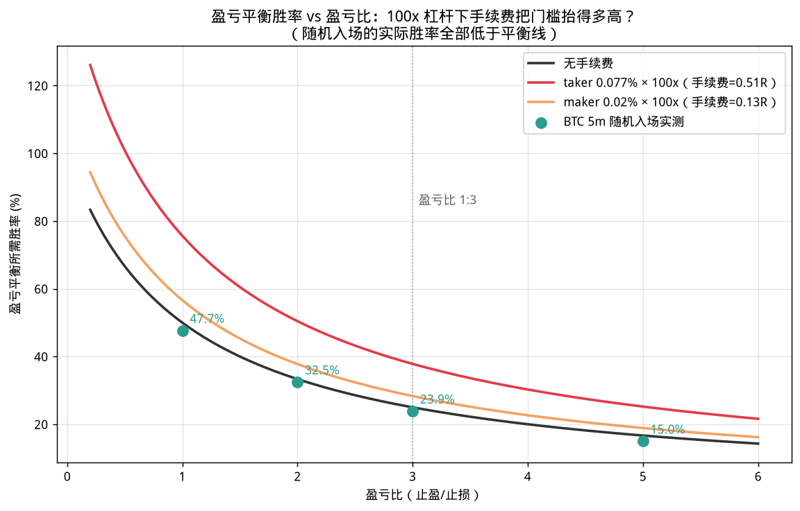
fig05 盈亏平衡胜率 vs 盈亏比（含手续费/实测点）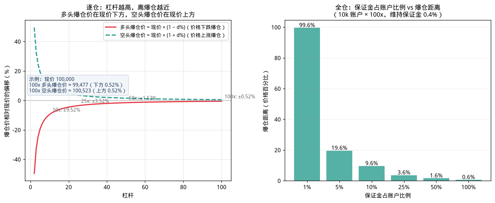
fig06 逐仓 vs 全仓爆仓距离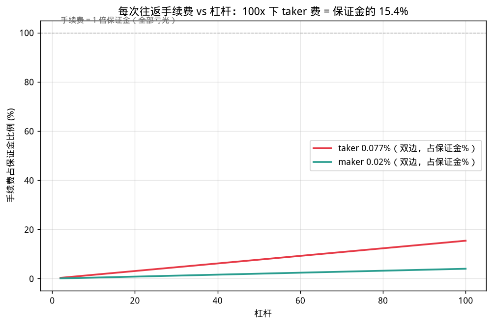
fig07 手续费占保证金比例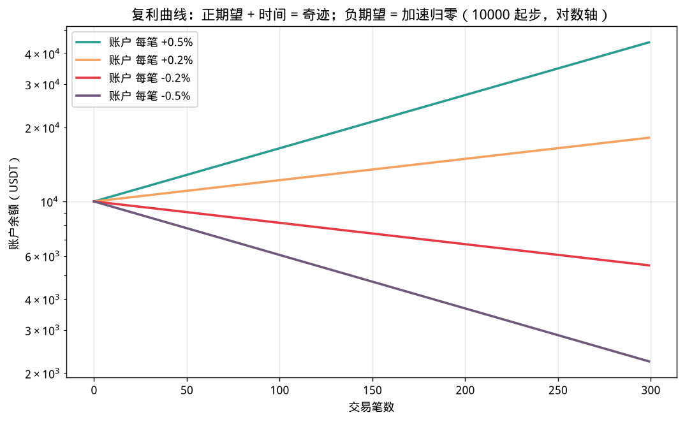
fig08 复利曲线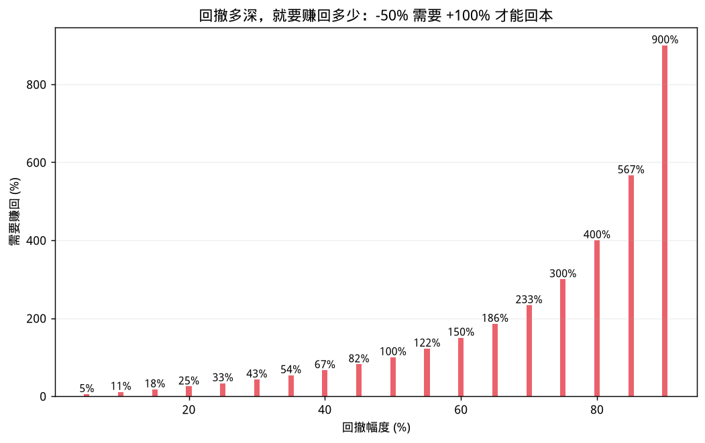
fig09 回撤恢复率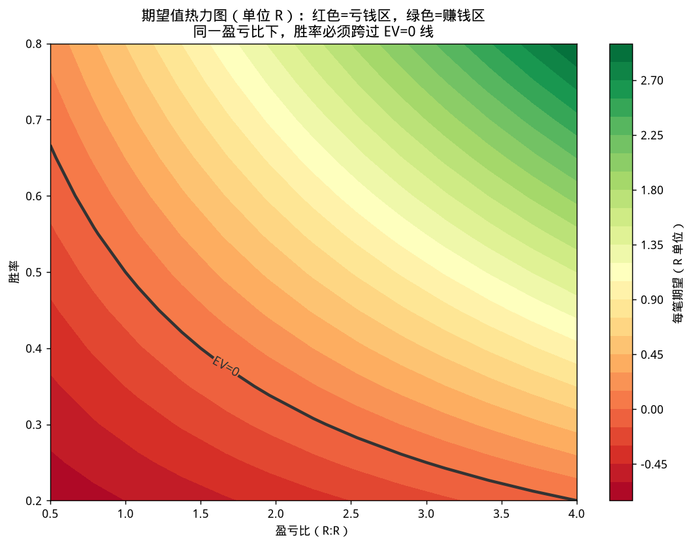
fig10 期望值热力图（EV=0 线）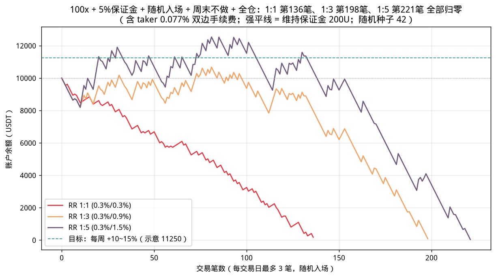
fig13 100x随机入场实战模拟（136/198/221 笔归零曲线）05 · 加密合约特有机制（自学版）
本章解决什么问题：为什么 BTC 现货赚了钱，合约却亏了？资金费率、爆仓引擎、插针——这些"现货没有的机制"才是合约的胜负手。 配套图：
fig06_liquidation_distance.png、fig07_fee_vs_leverage.png
1. 直觉理解（一句话本质）
合约 = 现货 × 杠杆 ×（手续费 + 资金费 + 爆仓引擎 + 插针）。 后三者是合约特有的"隐形税"，你不懂它们，赢的钱会被悄悄收走。
2. 数学/逻辑（四个机制的算法）
2.1 资金费率（Funding Rate）
- 每 8 小时（Binance）结算一次：多头付空头 / 空头付多头。
- 为什么存在：永续合约没有到期日，价格靠资金费率锚定现货。多头过多 → 费率转正 → 多头付钱给空头 → 压制做多热情 → 价格回到现货附近。它是"价格锚定机制"的税收形式。
- 定价推导（简化）：费率 ≈ (标记价 − 现货价)/标记价 × 溢价系数，多空失衡越大费率越高（Binance 具体公式为利率 + 溢价，利率基准 0.01%）。所以"极端正费率 = 多头拥挤"有直接的定价逻辑：正费率是对多头持仓的持续收费，收费越高 = 越多多头在付钱 = 市场一边倒。
- 极端正费率（持续 >0.05-0.1%）= 市场一边倒 = 过热信号，常伴随顶部（03b 章周期/情绪联动）。
- 成本推导：每天 3 次结算，费率 0.01%/8h：
年化成本 = 0.01% × 3 × 365 = 10.95% ≈ 11% 持仓 30 天 = 0.01% × 90 = 0.9%（无风险成本，无论涨跌都要付）长期持仓必须算这笔账——它和手续费一样是"确定性成本"。
2.2 爆仓引擎（Liquidation）
- 维持保证金率：10x≈0.4% 档位（Binance 按仓位大小分层，越大越严）。
- 逐仓爆仓距离 = 1/杠杆 − 维持率 − 手续费率（04 章公式④，完整推导见 04 章 5.1）。
- 为什么强平线在"维持保证金"而不是"初始保证金"：交易所允许你亏损到只剩维持保证金（不是亏完）——这样市场波动中你不会频繁被平，但一旦跌破维持线，交易所立即接管市价平仓（防止穿仓）。所以"爆仓"发生时你的保证金通常还剩 0.4%×名义，不是 0——但插针/流动性枯竭时实际成交可能远差于理论价。
- 全仓 vs 逐仓：全仓共享账户保证金（更"抗揍"但所有仓一起死），逐仓隔离（单仓爆了不连累其他）。
2.3 插针/滑点（Liquidity & Slippage）
- 插针：价格瞬间打到流动性池（止损单密集区）再弹回 = 流动性猎杀（01 章）。你的止损单就是插针的燃料。
- 滑点：大单/极端行情下成交价偏离标记价。保守估算每笔 0.01-0.05%，爆仓后追平更贵。
- 挂单（maker）vs 市价（taker）：maker 0.02%、taker 0.05%（Binance 常规档），高频玩法必须 maker（03 章 1.2 节完整账：taker 日内 = 保本胜率 127%）。
2.4 手续费（公式重述）
每笔往返 = 名义 × 双边费率。100x 下 taker 往返 = 保证金的 15.4%（04 章）。
3. 实战应用（机制怎么用）
- 资金费当情绪指标：正费率极高（>0.05%）+ 价格高位 = 别追多（03b 章恐惧贪婪交叉验证）。 边界：负费率/低费率 ≠ 底部信号（熊市可以长期负费率继续跌）；费率只是拥挤度指标，方向要等结构确认（01 章 HH/HL）。
- 止损放流动性池边缘：别把止损放得"人人可见"（前高上方 1 个点），放远一点或用 ATR，不然你就是插针的燃料。 边界：也不要为了躲插针把止损放得无限远——止损距离受两个约束夹击：下限 ≥1.5-2×ATR（02 章 3.1，太窄被噪声扫）、上限 ≤ 爆仓距离÷2（04 章 6.1，太宽先爆仓）。在这两个约束之间取"逻辑失效位"（01 章 3.4）。
- 杠杆选择表（04 章公式④速查）：止损 1% 的单子杠杆上限 50x；止损 3% 上限 25x；止损 5% 上限 10x。 规则：杠杆 ≤ 1 ÷ (止损距离×3)（留 3 倍余量）。 这个"3 倍"和 04 章 6.1 推导的"2 倍"是什么关系：04 章的 2 倍是数学底线（L ≤ 1/(2s+mmr+fee)，保证"先止损、后爆仓"）；这里的 3 倍是经验版本——用 1/(3s) 把维持保证金、手续费、极端行情插针/滑点全部吞进去，是更保守的实践规则。底线用 2 倍，实盘建议 3 倍：同样是止损 3.65% 的单子，2 倍规则给 12.7x，3 倍规则给 9.1x（取 10x）——08 章案例用的正是 10x。 边界：表格里的 50x/25x/10x 是"满仓"上限——任何时候都不该用满（要留资金应对波动、加仓、新机会）；实际建议用上限的 1/3-1/2。
- 极端行情（数据公布/减半前后）降杠杆：波动率翻倍时，同样止损距离爆仓概率翻倍。 边界：降杠杆 ≠ 空仓——如果你确认大方向，可以降杠杆/缩仓继续持有，或干脆空仓等波动过去（取决于你的策略和心态）。
3.5 反面案例：三大机制各算一笔账
案例 A：不看资金费率的"长线扛单"（慢性失血账）
2021-2022 熊市里，有人持有多单"等回本"。假设持单 12 个月，期间平均资金费率 +0.01%/8h（牛市高位尤其高，2021-04~05 曾持续 0.05-0.1%/8h）：
名义 50,000U、10x（保证金 5,000U）、持单 365 天：
资金费成本 = 50,000 × 0.01% × 3 × 365 = 54,750U/年——比名义价值还多？！
等等——这是费率复利，按名义价值算，不按保证金：50,000 × 0.01% = 5U/次 × 3次/天 = 15U/天 × 365 = 5,475U/年 = 名义的 10.95% = 保证金的 109.5%（5,475/5,000）。扛单一年，光资金费就把保证金亏光一遍——还没算价格本身下跌。这就是"不看资金费率长期扛单 = 慢性失血"的完整账。
（注：实际牛市高位费率可到 0.05-0.1%/8h，成本再放大 5-10 倍——2021-04 持多单一个月，光资金费就烧掉名义的 4.5-9%。）
案例 B：止损卡在"结构位正上方"被插针扫掉（真实行情账）
2026-09-03（08 章完整案例）：假设你在 80,500 做多，止损精确放"前高 80,514 上方一点"= 80,550：
9/3 21:00 价格插针到 82,248 后快速回落：
插针回落途中扫掉 80,550 的止损 → 你被迫离场
但之后价格跌到 74,910——你方向"看对了"（该做空）却先被扫
如果你按"逻辑失效位"（82,400 上方）放止损：
插针 82,248 没到你止损 → 你拿住单子 → 等 CHoCH 确认后反向操作 → 盈利
教训：止损精确卡在结构位 = 给流动性猎杀者送燃料（01 章 3.4 机制推导）。
案例 C：全仓模式下"一仓爆，全部爆"（联动爆仓账）
账户 10,000U，全仓模式开两仓： - 仓 1：BTC 多 5%×100x = 50,000U 名义 - 仓 2：ETH 多 5%×100x = 40,000U 名义（共 90,000U 名义）
维持保证金 = 90,000 × 0.4% = 360U
爆仓距离 = (10,000 − 360)/90,000 = 10.7%
对比逐仓：仓 1 单独爆仓距离 = 19.6%（04 章 5.2），仓 2 单独也 19.6%。全仓把所有仓位绑成一条船——BTC 和 ETH 同跌 10.7% 时，两仓一起爆、账户归零；逐仓下同样的行情，两仓各亏一半保证金但不会全灭。全仓的"抗揍"是把所有仓位的命绑在一起换来的——多品种必须逐仓（依据：相关性，BTC/ETH 同涨同跌，2022-06-13 一天同跌 15%+，真实数据）。
3.6 一句话总结
合约的四个隐形税（手续费/资金费/爆仓引擎/插针）每一个都有确定的算法和真实案例——它们不是"风险"，是"成本"，而成本是可以提前算清的。算不清 = 裸奔。
4. 新手误区
- ❌ "合约能做空所以多空都赚"：双向交易 = 双向亏损的机会，杠杆只是放大了。
- ❌ 不看资金费率长期扛单：年化 11% 的成本，扛单等于慢性失血。
- ❌ 止损精确放在结构位正上方：那正是庄家要扫的地方。放结构位上方"足够远"（>1×ATR）。
- ❌ 把"全仓 19.6% 不爆"当成安全：不爆 ≠ 赚，EV 为负照样归零（04 章 fig13）。
速记卡（Anki）
- Q: 资金费率什么时候为正、谁付钱？ A: 多头占优时为正，多头付空头；极端正费率=过热信号。
- Q: taker vs maker 费率？ A: taker ~0.05%、maker ~0.02%（Binance 常规档）。
- Q: 100x 下 taker 往返手续费 = 保证金多少？ A: ~15.4%。
- Q: 杠杆选择的经验规则？ A: 杠杆 ≤ 1÷(止损距离×3)。
- Q: 为什么止损别放在结构位正上方？ A: 那是止损单密集区=插针/流动性猎杀的目标。
- Q: 全仓 vs 逐仓区别？ A: 全仓共享保证金更抗揍但一起死；逐仓隔离单仓爆了不连累。
思考题（先自己想，答案在末尾）
- 你持有多单 30 天，期间资金费率平均 +0.01%/8h。光资金费就吃掉你多少 %？（不算复利）
- 你的止损离现价 0.5%，用的是 25x。价格先插针到你的止损、随后反弹到你的目标。你赚了吗？为什么？（结合插针机制）
- 为什么极端行情前要降杠杆？用波动率/爆仓距离解释。
参考答案
1. 30 天 = 90 次结算 × 0.01% = **0.9%**。看着不多，但这是无风险成本；如果持仓 1 年 = 约 11%（年化 0.01%×3×365）。 2. 没赚，**你亏了**。插针触发你的止损 = 成交；之后反弹跟你无关。这就是"止损被扫后行情反转"的经典剧情——你的止损正好在流动性池里。解法：止损放到 ATR 之外 + 结构位上方留余量。 3. 波动率翻倍时，同样的"距爆仓 3.5%"（25x）可能一次 10 分钟波动就触发；并且插针/滑点在极端行情放大，实际成交价更差。降杠杆 = 给同样的止损距离留 3 倍安全边际。新手最常踩的坑
- [ ] 我持仓超过 1 天时算过资金费成本吗？
- [ ] 我的止损是不是精确卡在"人人都会放"的价位？
- [ ] 我是不是在数据公布前还开着重仓？
- [ ] 我是不是用 taker 市价单在做高频？（是 = 改 maker 挂单）
06 · 验证方法论（自学版）
本章解决什么问题：你的策略"看起来"很赚钱，为什么实盘就崩？回测 100% 收益的曲线，是不是骗你的？ 目标：学会用 30 分钟写一张假设卡、用程序化回测验证、识别未来函数和过拟合。 配套图：
fig02_market_structure.png（回测时同样要先定义结构）
1. 直觉理解（一句话本质）
验证 = 把你的想法变成可证伪的假设，用历史数据检验，再判断"是真的还是碰巧"。 大部分"策略"死在第三步——不是没赚过钱，是赚的钱经不起检验。
2. 数学/逻辑（为什么手动复盘会骗你）
- 选择性记忆：大脑自动记住赚钱的单、忘掉亏钱的单 → 你统计的胜率比真实高 10-20%。
- 前视偏差（未来函数）：你在决策时"无意中"用了未来才知道的信息（比如看到了后面的走势再画支撑线）→ 回测胜率虚高。
- 过拟合：参数调 100 次，总有一组参数在历史数据上完美（曲线拟合噪音）。样本越少、参数越多，过拟合越严重。
- 幸存者偏差：你只看到"活下来的策略"，死了 99 个你没看到。
数学上：策略的"样本内表现"几乎总是好于"样本外表现"。 唯一的解药是：留出你没碰过的数据段做最终检验（OOS），并和基准（恒多/等权/随机）对比。
3. 实战应用（30 分钟验证流程）
3.1 写研究假设卡（先写卡，再写代码）
假设卡（hypothesis.md）
- 市场观察：BTC 1H 假突破后（突破前高后 2 根 K 线内收回）反转概率 > 50%
- 信号定义：收盘价突破前高 → 之后 2 根 1H 收盘价跌回突破位 → 做空
- 入场/出场：T+1 开盘入场；止损 = 插针高点+ATR；止盈 = 2R
- 数据/时间：BTC 1H 2019-2026；手续费 taker 双边 0.154%；滑点 0.02%
- 基准：随机入场（同频率、同止损止盈）对比
- 失败标准：扣成本后 EV ≤ 0，或 OOS 显著差于开发段
3.2 程序化回测（防未来函数模板）
df['sig'] = ... # T 日收盘后出信号（只用 T 日及之前数据）
df['entry'] = df['open'].shift(-1) # T+1 开盘成交；最后一根 dropna 丢弃
ret = (df['exit'] - df['entry']) / df['entry'] - fee*2 - slippage
bench = df['close'].pct_change().sum() # 恒多基准（close→close，报告注明口径）
三条铁律：①只用当日收盘前数据出信号；②T+1 开盘成交；③扣双边手续费+滑点。
3.3 判断结果（对照基准 + 审计清单）
- 对比基准：策略 vs 恒多 vs 随机入场。赢不了随机入场 = 你的"edge"不存在。
- 样本量：至少 200 笔，否则任何胜率都不可信（95% 置信区间太宽）。
- OOS：开发段漂亮（如 4 年 +49.9%），OOS 一测就崩（2024 慢牛 −4.2%）= 过拟合经典症状（本手册 SMC 真实案例）。
为什么"至少 200 笔"（置信区间推导）：胜率的抽样误差服从二项分布，95% 置信区间半宽 ≈ 1.96×√(p(1−p)/n)。设真实胜率 60%：
n = 30: 半宽 ≈ 1.96×√(0.24/30) = 17.5% → 95% CI = [42.5%, 77.5%]
n = 100: 半宽 ≈ 9.6% → [50.4%, 69.6%]
n = 200: 半宽 ≈ 6.8% → [53.2%, 66.8%]
n = 500: 半宽 ≈ 4.3% → [55.7%, 64.3%]
含义：30 笔测出的"60% 胜率"实际可能在 42.5%-77.5% 之间——保本线 50% 完全落在区间内，你根本无法判断这策略是赚是亏。200 笔把区间压到 ±6.8%，才能把"60%"和"保本 55% 附近"区分开。"200 笔"是经验值，依据就是上面的置信区间公式 + 覆盖至少 4 种市场状态（趋势/震荡/牛/熊）的要求。 如果你的策略年交易量不足 200 笔，要么降低判断标准（承认不确定性），要么接受"要等更久才知道"。
3.4 本手册 SMC 回测的教训（真实数据）
- 纯规则化 SMC 策略 1x 杠杆 6 年最佳 +58%，但 OOS 2024 慢牛胜率 17% 失效；
- 100x 随机入场全灭（136~221 笔归零）；
- 结论：程序化无法复现"两年 167 倍"——那些神话大概率是选择性展示+杠杆+幸存者偏差。
3.5 三个真实数字账（为什么验证流程每条都必要）
账 1：不扣成本 = 利润幻觉（SMC 实测）
同一个策略，只改"扣不扣手续费滑点"：
零成本回测：2021 +98.6%，2023 +25.7%（PF 1.28-1.31，看起来很强）
扣 0.07% 成本：2021 +33.7%（PF 1.13），2023 −7.7%
成本把 2021 年利润吃掉了 66%、把 2023 年从正变成负。你看到的所有"无成本回测曲线"都要先打三折再信。这就是 3.2 铁律③存在的理由——成本是确定性的，回测里不扣 = 自欺。
账 2：过拟合的典型曲线（参数敏感）
SMC 策略调"平台参数 mom"（多少根 K 线的平台算有效）：
mom = 4：6 年 +50%+（平台区，稳定）
mom = 6：+49.9%（还在平台区）
mom = 14：+120%（孤峰——只是恰好拟合了某段历史）
mom = 13：+40%（孤峰旁边就掉回均值）
判断规则：参数扫描图里，平台区（一片都稳定）可信，孤峰（只有一两个点高）必是过拟合。如果 A=14 给 +120% 而 A=13 只给 +40%，这个 +120% 没有任何信息量——它是噪音拟合。换 OOS 段一测就现原形（本手册 SMC：开发段漂亮的组合 OOS 2024 慢牛胜率 17% 直接失效）。
账 3：开发 vs OOS 的落差（walk-forward 的意义）
SMC v2 全配置回测：
开发段 2021：+33.7%（PF 1.13）—— 好像能接受
OOS 2022：−53.1% —— 崩
OOS 2023：−7.7% —— 还是亏
OOS 2020：−36.4% —— 继续亏
"开发段好看"只证明"它在历史上拟合得好"，不证明"未来能赚"。 walk-forward（滚动开发→检验）的价值就是强迫你看 OOS：任何策略交卷前必须报 OOS，否则等于没验证。
3.6 验证方法论的边界（什么时候这套流程不适用/会误导）
- 策略信号本身就是前视性的（比如用"未来 20 根 K 线后的走势"定义入场）：回测框架再严格也救不了——先检查信号定义，再谈回测（信号必须只用 T 日及以前的数据）。
- 样本太少（<30 笔）时回测结论没有统计意义：不是"策略差"，是"无法判断"——此时该做的是继续积累样本（06 章 3.3 置信区间），不是改参数。
- 市场结构剧变后（如 2024-11 后 BTC 进入新周期）：历史回测的分布可能不再适用——回测通过 ≠ 未来一定有效，这也是为什么实盘要小仓位试运行 1-3 个月（OOS 的实盘版）。
- 回测是对"历史噪音"的拟合 vs 对"真实规律"的捕捉：永远分不清？分得清——用 OOS + 平台区参数 + 换市场验证（SMC 结论里"换 XAUUSD 验证位置因子"就是这个思路）。单一市场、单一时间段的回测，可信度打五折。
- 策略失效 ≠ 回测错了：2024 慢牛 SMC 胜率 17% 是市场状态变化，不是程序 bug——区分"策略失效"和"实现错误"很重要：前者正常（市场会变），后者是你的 bug（要修）。
4. 新手误区
- ❌ 在回测软件里反复调参直到曲线漂亮：这就是过拟合本身。
- ❌ 拿 30 笔交易说"胜率 80%"：样本不够，统计上无意义。
- ❌ 不扣手续费/滑点：回测利润减半甚至归零是常态。
- ❌ 把"事后画的图"当"当时能看到的信号"：这是最隐蔽的未来函数。
速记卡（Anki）
- Q: 验证流程三要素？ A: 假设卡（先写）→ 程序化回测（防未来函数）→ 与基准对比+审计。
- Q: 防未来函数铁律？ A: T 日收盘出信号、T+1 开盘成交、扣双边费+滑点。
- Q: 样本量至少多少笔？ A: 200 笔（否则胜率统计不可信）。
- Q: 过拟合的经典症状？ A: 开发段很漂亮、OOS 崩；参数微调就大变。
- Q: 判断策略有没有 edge 的基准？ A: 恒多/等权/随机入场——赢不了随机=没有 edge。
- Q: 为什么手动复盘会骗自己？ A: 选择性记忆 + 前视偏差 + 幸存者偏差。
思考题（先自己想，答案在末尾）
- 有人给你看一个"3 个月翻 50 倍"的回测曲线。你至少该问哪三个问题？
- 你在回测里发现"参数 A=14 时 6 年 +120%，A=13 时 +40%"。这说明了什么？你会怎么处理？
- 为什么"T 日收盘价算信号 + T 日收盘价成交"是作弊？具体错在哪一步？
参考答案
1. ①扣了手续费/滑点吗？（成本后收益是多少）②样本多少笔、和基准（恒多/随机）比过吗？③有没有留 OOS 数据段？（曲线是样本内调出来的吗）——三个问题问完，90% 的"神曲线"会当场露馅。 2. 说明策略对参数极敏感 = **过拟合信号**：A=14 只是在拟合历史噪音。处理：①拒绝使用该参数；②换独立 OOS 段验证；③如果必须选参数，选"平台区"（附近参数都稳定的值，而不是孤峰）。 3. 错在**成交价用了未来信息**：T 日收盘价在 T 日收盘那一刻才能知道，而"按收盘价成交"意味着你假定自己能在收盘瞬间以收盘价买到——现实中收盘价成交需要 T+1 开盘（有跳空）。正确做法：信号用 T 日收盘数据，成交用 T+1 开盘价（模板里的 shift(-1)）。这看起来只差一点点，长期回测里会系统性地高估收益。新手最常踩的坑
- [ ] 我是不是还没写假设卡就开始"试参数"了？
- [ ] 我的回测扣了双边手续费和滑点吗？
- [ ] 我的结论样本 ≥ 200 笔吗？
- [ ] 我有没有拿没见过的数据段（OOS）做过最终检验？
07 · 复盘日志：把"感觉"变成"数据"（完整推导版）
本章解决什么问题：为什么同样的错误反复犯？为什么总觉得"自己判断挺准"但账户不涨？ 目标：学会一套 5 分钟复盘流程，让错误被命名、被统计、被消灭。每一个复盘维度都有公式依据，不是习惯。 配套图：
fig14_review_template.png（复盘表格长什么样）
1. 直觉理解（一句话本质）
复盘 = 数据采集。 盈亏曲线只是结果，复盘表才是原因。人脑会撒谎，表格不会。能被命名的错误，才有机会被改掉。
2. 数学/逻辑（为什么复盘是"必要"不是"自律"）
2.1 复盘的数学根据：EV 公式的每个变量都需要数据
回顾 04 章的期望值公式：
EV = p × W − q × L − f
- p（真实胜率）：你唯一知道的 p 来源是历史交易统计。不复盘 = 你对 p 的估计完全来自记忆——而记忆有选择性偏差（只记对的）→ 你用的 p 比真实高 10-20%（06 章 2 节）→ 你按错误的 p 做仓位决策（凯利 f* 也错）。
- W / L（平均盈/亏）：不统计就不知道你的平均亏损是不是被"扛单"扭曲了（04 章 7.1：扛单把单笔亏损从可控变成 12.8 倍）。
- f（手续费/滑点）：复盘表记录每笔真实成交价 → 你才知道实际滑点是不是比预想大。
所以复盘不是"好习惯"，是 EV 公式的输入采集。没有输入，公式失效，所有仓位计算（04 章）都是在错误参数上运行。
2.2 为什么"复盘 5 维度"正好是这五个（映射推导）
| 复盘维度 | 对应 EV/风控公式的哪个变量 | 不记录会怎样 |
|---|---|---|
| ① 入场理由 | p 的来源（这个理由真实胜率多少） | 无法分组统计胜率，p 永远是一坨 |
| ② 止损合理 | L 的上限（最大亏损） | 止损乱放 = L 不确定 |
| ③ 仓位超标 | f*/风险 1-2%（04 章 3.3） | 违反仓位规则 = 实际风险是标称的 2-5 倍 |
| ④ 情绪干扰 | p 的隐性杀手（FOMO 单胜率通常低于统计） | 情绪单混进样本，污染 p |
| ⑤ 出场纪律 | W/L 的实现（提前平仓 = 实际 W 缩小） | 规则内 W 是 2R，实际只拿 0.5R → EV 缩水 |
五个维度恰好覆盖 EV 公式的每一个变量——这就是"为什么是这五维"的推导。少记一维 = 公式少一个输入 = 你的整个系统在残缺数据上运行。
2.3 为什么"30-50 笔才统计"（置信区间推导）
和 06 章"200 笔"同一个原理（抽样误差），但复盘是分组统计：按"入场理由"分组后每组样本更少。5 组理由 × 每组 30-50 笔 = 总 150-250 笔。每组 30 笔的胜率 95% 置信区间半宽 ≈ ±17.5%（06 章 3.3）——你不能拿 5 笔就说"这个理由不赚钱"，至少要 30 笔才值得下判断。复盘统计的最小样本：总 200 笔、单组 30 笔（经验值，依据=二项分布置信区间）。
2.4 不复盘的成本账（反面案例，算给你看）
案例：不复盘的"高手"——假设你真实胜率 40%（RR 1:1，EV = −0.2R/笔，理论上必亏），但你凭记忆觉得"自己大概 60%"：
按 60% 胜率做凯利（f* = 20%，1/4 凯利 5%）
实际 40% 胜率 → 正确仓位应该是 0（EV<0 不该做）
你用 5% 风险连续亏 20 笔：0.95^20 = 35.8%（亏 64%）
如果 20 笔时就复盘统计：20 笔显示胜率 40%（置信区间 [18%, 62%]）——至少让你警觉"低于 50%"，停手检查。不复盘 = 在错误参数上跑 200 笔才被市场教育；复盘 = 20-30 笔时就自己发现。
案例：复盘五维里最常被跳过的一维（情绪）——某散户统计 100 笔：按规则入场 60 笔（胜率 55%，EV +0.1R）、FOMO 追单 40 笔（胜率 20%，EV −0.6R）：
混合统计：胜率 (60×55%+40×20%)/100 = 41%，EV = −0.18R/笔 → "我水平不行"
分组统计：规则单 +0.1R，FOMO 单 −0.6R → "我该砍掉 FOMO，不是砍掉策略"
同样的数据，不复盘看是"策略没用"，复盘看是"情绪单在拖垮策略"——分组统计直接给出行动方向。这就是 3.3 节"按理由/情绪分组"的数学价值。
3. 实战应用（5 分钟复盘流程 + 5 个维度）
3.1 每笔交易后 5 分钟复盘（趁记忆新鲜）
| # | 维度 | 要问的问题 | 好复盘的标准 |
|---|---|---|---|
| 1 | 入场理由是否成立 | 结构判断对吗？计划内还是临时起意？ | 能写出一句无歧义理由（如"跌破 80,000 CHoCH 确认"），不是"感觉要跌" |
| 2 | 止损是否合理 | 放在结构外了吗？距离匹配 ATR 吗？ | 能讲出逻辑："价格回到这里=入场逻辑失效" |
| 3 | 仓位是否超 | 风险 ≤ 账户 1-2% 吗？ | 每笔风险 = 账户×1%÷止损距离（04 章 5.4），算多少下多少 |
| 4 | 情绪有没有干扰 | 是 FOMO/报复性/无聊手痒吗？ | 如实填情绪标签——和亏损的关系会在统计里现形 |
| 5 | 出场是否按计划 | 到止盈/止损就执行吗？提前平了吗？为什么？ | 偏离计划=纪律问题，比亏钱更严重 |
重点：第 5 条"提前手动平仓"是高频错误。问自己：看到新信息了，还是只是怕浮盈回吐？前者是调整，后者是情绪（会直接缩小 W，见 2.2 表）。
3.2 复盘表模板（直接复制使用）
| 日期 | 交易对 | 方向 | 入场理由 | 止损位 | 止盈位 | 仓位% | 盈亏结果 | 情绪标签 | 改进点 |
|---|---|---|---|---|---|---|---|---|---|
| 2026-09-04 | BTCUSDT | 空 | 假突破插针 82,248 + 跌破 80,000 CHoCH 确认 | 82,400 | 75,000 | 2.7% | +151U (+1.5%) | 平静→满足 | 等反弹确认再入场，正确；止损按结构放，没被扫 |
| 2026-09-10 | BTCUSDT | 多 | 看到 15m 双底就进，没等结构确认 | 76,000 | 78,500 | 5.0% | -250U (-2.5%) | FOMO/急躁 | 违反入场清单：结构未成立；仓位超 1-2% 上限 |
填写规则：入场理由必须能写成"因为 A，所以我做 B"；止损止盈写数字；仓位写保证金占账户 %；情绪标签一个词；改进点只写可执行的一句，不写"我要更自律"。
3.3 三种复盘节奏 + 统计方法
- 每笔后（5 分钟）：填表，重点记情绪标签和当下想法。
- 每周（30 分钟）：统计本周胜率/期望值/最大回撤，找出 1 个本周最该改的错误。
- 每月（1 小时）：按"入场理由"和"情绪标签"分组统计（2.4 节案例），得出"我什么情况下会亏"，更新交易规则。
分组统计怎么做：把复盘表导出，按"入场理由"列分组算每组胜率/平均盈亏；再按"情绪标签"分组算。胜率最低/亏损最大的组 = 你的下一个改进点——这一条规则就是你的个人 edge 数据库（06 章假设卡的来源）。
3.4 复盘规则的边界
- 复盘频率不是越高越好：持仓中每 10 分钟看一次盘不算复盘（那是盯盘焦虑）；复盘是"交易结束后"的固定流程，白天做了错事晚上一起记也行。
- 复盘 ≠ 自我审判：目的是改进不是自责。记录"违反了什么规则"，不写"我怎么这么蠢"（自责会让人逃避记录 = 样本又断了）。
- 什么时候复盘会误导：样本 <30 笔就下结论（2.3 节置信区间）；把单笔结果（运气）当系统结论；只复盘亏损单不看盈利单（盈利单里混着运气，不拆开会把运气当能力）。
4. 新手误区
- ❌ 只复盘亏损单：盈利单更要复盘——"赚了是因为逻辑对，还是运气好？"不搞清楚会把运气当能力，然后加倍下注送回去（2.4 节：不拆开 = 混合统计误导）。
- ❌ 复盘变成自我审判：目的是改进不是自责。记录"违反了什么规则"，不写"我怎么这么蠢"。
- ❌ 记了不统计：填完不回头看=白填。每周/每月必须做汇总统计，否则复盘表只是情绪垃圾桶（2.1 节：不复盘=公式没有输入）。
速记卡（Anki）
- Q: 复盘的本质是什么？ A: 数据采集——把感觉变成数据，再把数据变成规则。
- Q: 复盘 5 维度为什么是这五个？ A: 恰好覆盖 EV = p×W − q×L − f 的每个变量（p/W/L/f + 风控）。
- Q: 入场理由写不出来的话意味着什么？ A: 当时根本没有理由——这一格就是最重要的发现。
- Q: 复盘频率三档？ A: 每笔 5 分钟、每周 30 分钟、每月 1 小时。
- Q: 为什么盈利单也要复盘？ A: 区分"逻辑对"和"运气好"，防止把运气当能力。
- Q: 分组统计最少多少笔才可信？ A: 单组 30 笔（95% 置信区间半宽 ±17.5%）。
思考题（先自己想，答案在末尾）
- 你复盘 10 笔后，发现 7 笔亏损单都标了"FOMO"。这告诉你什么？你会怎么做？
- "提前手动平仓"了但少赚了 50%。按 5 维度，这笔复盘该怎么写？这是好交易还是坏交易？
- 为什么说"填完表不统计 = 白填"？用 EV 公式解释。
参考答案
1. 说明你的主要亏损来源不是技术，是**入场情绪**——七成亏损在你下单前就决定了。做法：①给自己加一条硬规则"错过就错过，结构不成立不开单"；②入场前强制等 15 分钟/等确认信号；③每月统计 FOMO 单占比，目标降到 0。**数学上**：FOMO 单的胜率远低于规则单（2.4 节案例 20% vs 55%），砍掉 FOMO 单 = 直接把 p 从 41% 拉回 55%。 2. 出场偏离计划 = 第 5 维度纪律问题。即使结果"少赚"，按流程也是**坏执行**：你破坏了可重复性。复盘应写"提前平仓，原因=怕浮盈回吐（情绪），下次到止盈位才动"。记住：一笔亏钱的**好交易**（按计划执行）比一笔赚钱的**坏交易**（临时起意）更值得保留——因为只有可重复的执行才能让统计有意义（2.2 表：提前平仓直接缩小 W，EV 缩水）。 3. 单笔复盘只回答"这一笔怎么了"；统计才回答"我系统性地在哪亏"（2.4 节：混合统计 41% vs 分组统计看出 FOMO 拖垮）。不统计，EV 公式的 p/W/L 全是记忆幻觉——**采集了数据不分析 = 公式没输入 = 和没复盘一样**。新手最常踩的坑
- [ ] 我这周填了复盘表但没做过任何统计？
- [ ] 我有没有只复盘亏损单、盈利单一笔没记？
- [ ] 我的入场理由栏有没有写过"感觉""应该"这类词？
- [ ] 我能不能说出自己最近 20 笔的真实胜率？（说不出=没在记录）
下一章：08-case-study.md 用一笔真实行情把"结构 → 信号 → 入场 → 风控 → 出场"完整走一遍，复盘表的第一行就来自那一笔。
📊 本章配图（大图 / 全景，可点击放大）
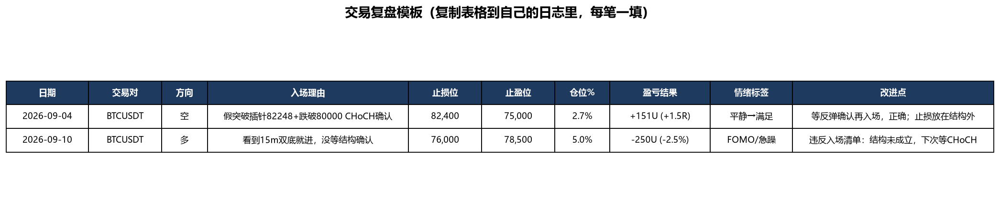
fig14 复盘表格模板（示例两行）08 · 完整交易走查：BTC 假突破 + 清算反转（2026-09）
本章解决什么问题：把 01-07 章的知识串起来，在一笔真实行情上完整走一遍——结构 → 信号 → 入场 → 止损 → 仓位 → 出场 → 复盘。 目标：合上书，你能照着这套流程独立走完一笔交易。 配套图：
figures/fig15_case_walkthrough.png（整段 K 线与所有标注）
1. 直觉理解（一句话本质）
交易 = 在结构确定的位置，等信号确认，用公式控风险，然后按计划执行到出场。 这一章就是一次全流程演示：没有任何一步靠"感觉"。
2. 行情背景（真实数据，2026-09）
2026 年 9 月初，BTC 在 76,000-79,000 震荡一个月。9/1 高点 78,866 反复压制价格，形成前期阻力区。9/3 下午价格放量拉起，发生一次教科书级假突破 + 清算反转：
09-03 14:00 大阳线 78,797 → 80,514（突破前期阻力 78,900）
09-03 21:00 插针高点 82,248（上方空头止损被扫，随即回落）
09-04 00:00-11:00 80,600~81,400 窄幅整理（诱多）
09-04 12:00 单根大阴线 81,185 → 79,425（跌破 80,000，CHoCH 确认）
09-04 之后 一路阴跌，09-15 最低 74,910
3. 实战应用（六步走查）
3.1 第一步：识别市场结构（先大后小）
- 大周期（4H/1D）：8 月以来 74,000-82,000 大区间震荡，无单边趋势 → 不追突破，等反转或回踩。
- 小周期（1H）：79,000 附近是多次反弹高点（9/1 高 78,866、9/3 上午反复测试），这是供给区，也是上方空头止损最密集的位置 → 流动性池。
结论：上方 79,000 上方是流动性池（空头止损），一旦突破扫掉，价格往往失去继续上行的燃料——"突破=陷阱"的高发场景。
3.2 第二步：在哪里等什么信号（不预测，只等确认）
- 位置：等价格突破 79,000 后的反应。
- 信号（二选一）：
- A 激进：突破后 1-2 根 1H 内长上影/大阴线收回 79,000 下方；
- B 稳健（本案例采用）：跌破 80,000 整数关口 + 跌破 9/4 早盘整理区间下沿（80,542），即 CHoCH。
9/4 12:00 大阴线（高 81,318 → 低 79,141，收 79,425）单根完成 CHoCH。此时不需要预测，只需按计划执行。
3.3 第三步：为什么在这里入场（写进复盘表）
做空逻辑：
假突破插针 82,248 扫掉上方空头止损 → 上方流动性被消耗 → 跌破 80,000 确认反转 → 做空。
强弱判断： - ✅ 插针后没站稳：上方没有真实买盘承接； - ✅ 诱多 11 小时后放量下破：多头已无力； - ⚠️ 反面证据：若真突破应继续向上 → 所以止损必须放插针上方，逻辑失效就走。
入场：9/4 13:00 反弹到 79,500 挂市价空单（等反弹比追 12:00 大阴线优——止损距离更短）。
3.4 第四步：止损放哪（结构止损 + 清算距离知识）
- 结构止损：插针高点 82,248 上方（82,400）——回到这里 = "假突破"逻辑不成立，认错出场。
- 为什么不放 80,000？心理关口一根反弹阳线就能扫掉；结构止损必须放逻辑失效的位置。
- 结合 05 章：止损距离 3.65% → 若 100x 满仓，爆仓距离仅 0.52%，价格没到止损先爆仓 → 宽止损单子杠杆必须降（本案例 10x）。
止损距离 = (82,400 − 79,500) / 79,500 = 3.65%
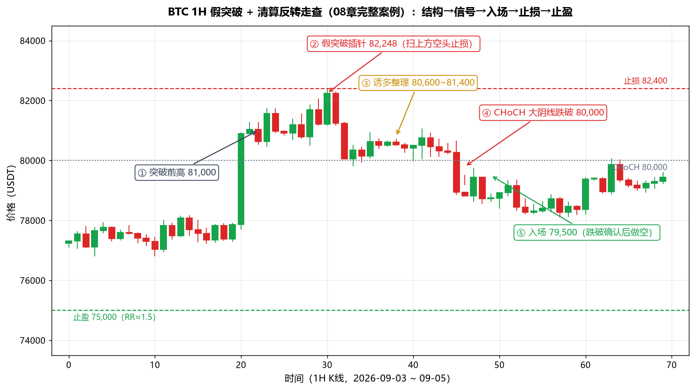
这张图把整个案例画在一张图里：①突破前高 ②假突破插针 82,248（扫空头止损）③诱多整理 ④CHoCH 跌破 80,000 ⑤入场 79,500 做空，止损 82,400（插针上方）、止盈 75,000（RR≈1.55）。对照文字走一遍，你就能在真实图表上复现这套流程。
### 3.5 第五步：仓位怎么算（04 章公式，不拍脑袋）
账户 10,000U，单笔风险 1%（100U），止损 3.65%：
名义价值 = 风险金额 ÷ 止损距离 = 100 / 3.65% = 2,740U 保证金（10x）= 2,740 / 10 = 274U（账户 2.74%） 最大亏损 = 2,740 × 3.65% = 100U = 账户 1% ✓
检查清单（对照 05 章 D2 速查表）：
- 10x 逐仓爆仓距离 ≈ 9.5% > 止损 3.65% ✅ 不会先爆仓
- 手续费：2,740 × 0.077% × 2 ≈ 4.2U，占风险 4.2% ✅ 可接受
### 3.7 六步走查的公式推导依据（每一步为什么这么做）
| 步骤 | 动作 | 公式/推导依据 | 在手册哪里 |
|---|---|---|---|
| ① 识别结构 | 先大周期后小周期，找供需区 | HH/HL/CHoCH 定义 | 01 章 3.1 |
| ② 等信号 | 不预测，等假突破收回/CHoCH | 流动性猎杀机制（止损池被扫=燃料耗尽） | 01 章 3.3-3.5 |
| ③ 定入场 | 等反弹入场，不追大阴线 | 追单=接大户卖单（对手方分析）；同结构止损下入场价越好 RR 越高 | 01 章 3.5、03 章 2.2 |
| ④ 定止损 | 放"逻辑失效位"（插针上方），不放心理关口 | 止损池机制（明显位=被扫目标）；止损 ≥1.5-2×ATR | 01 章 3.4、02 章 3.1 |
| ⑤ 定仓位 | 风险固定法：名义 = 账户×1%÷止损距离 | 凯利打折 → 单笔风险 1-2%；爆仓距离 ≥2×止损 | 04 章 3.3、5.4、6.1 |
| ⑥ 定出场 | 止盈放结构位，按计划执行，不提前平 | 提前平仓缩小 W → EV 缩水；出场纪律是 EV 变量之一 | 07 章 2.2 |
**为什么是这个顺序（不能跳步）**：①决定方向（没有方向，后面全是随机）→ ②③决定"进场质量"（追单 vs 回踩利润差 2.4 倍，03 章 2.2）→ ④决定"最大亏损"（止损错位 = L 不确定）→ ⑤决定"亏多少"（仓位错 = 实际风险翻倍）→ ⑥决定"赚多少"（提前平 = W 缩水）。**六步正好是 EV = p×W − q×L − f 的完整装配线：①-③ 管 p，④-⑤ 管 L，⑥ 管 W。**
### 3.8 边界条件（什么时候这套流程不适用）
- **高波动事件日**（CPI/美联储/减半前后）：插针和跳空放大，结构止损可能被一根 K 线击穿，仓位减半或空仓（05 章 3.4）。
- **单边加速行情**（2020-12 那种连阳）："等反弹入场"可能永远等不到——用突破+1 根收盘确认替代（03 章 2.2 边界）。
- **震荡区间内**：本案例是"区间边缘反转"；区间中间不要用突破逻辑（既不是突破也不是回踩，纯噪音区，02 章 ADX<20 别追突破）。
- **低流动性时段**（周末凌晨）：滑点放大、止损成交价可能远差于理论值，小账户尤其要回避。
### 3.6 第六步：什么时候出场 + 复盘
- **初始止盈**：75,000（前期震荡区下沿 + 整数关口），RR = 4500/2900 = **1.55:1**。
- 实际走势：9/5-9/9 在 78,000-79,700 磨蹭 5 天 → 按计划持仓（无新信息不提前跑）；9/10 加速下杀，**9/15 最低 74,910 触发止盈**。
盈利 = 2,740 × (79,500−75,000)/79,500 ≈ 155U − 手续费 4.2U ≈ +151U（账户 +1.5%） ```
复盘（填 07 章表格）：入场理由✅（写得出"因为插针+CHoCH，所以做空"）、止损结构位✅、仓位 2.74%✅（未超 1-2% 风险上限）、情绪平静✅、出场按计划✅——五维全绿，一笔"好交易"。
4. 新手误区
- ❌ 追 12:00 那根大阴线入场：追单止损距离大、成本高；等反弹入场（本案例 79,500）止损更短。
- ❌ 止损放心理关口（80,000）：会被反弹阳线扫掉；要放逻辑失效位（插针上方 82,400）。
- ❌ 宽止损配高杠杆：3.65% 止损 + 100x = 先爆仓；止损越宽杠杆必须越低（05 章爆仓距离）。
- ❌ 磨蹭 5 天就手动平仓：没有新信息 = 按计划持仓；提前平 = 07 章第 5 维度纪律问题。
速记卡（Anki）
- Q: 六步走查顺序？ A: 结构 → 信号 → 入场 → 止损 → 仓位 → 出场+复盘。
- Q: 本案例的做空逻辑一句话？ A: 插针扫掉上方空头止损 + 跌破 80,000 CHoCH → 流动性耗尽反转。
- Q: 为什么止损放 82,400 不放 80,000？ A: 82,400 是逻辑失效位；80,000 是心理关口，反弹即被扫。
- Q: 仓位公式？ A: 名义 = 风险金额 ÷ 止损距离；保证金 = 名义 ÷ 杠杆。
- Q: 宽止损单子杠杆怎么配？ A: 让爆仓距离（05 章）> 止损距离，如 3.65% 止损配 10x。
- Q: 为什么"磨蹭 5 天"不平仓？ A: 没有新信息 = 按计划持仓，提前平是情绪不是纪律。
思考题（先自己想，答案在末尾）
- 如果 9/5 价格没有阴跌而是直接站上 82,400，你应该做什么？为什么这笔单子依然不算"错"？
- 假设你想把 RR 提到 2:1：止盈放哪？风险不变的话仓位要变吗？
- 用同样六步走查 2026-09-18 ~ 09-21 行情（9/18 从 78,027 涨到 9/21 的 85,877）——那是"突破后的延续"，和本案例"假突破反转"差别在哪？
参考答案
1. **止损出场**（82,400 触发），亏损 = 100U = 账户 1%。这笔依然是"好交易"：你按计划执行了，结果由市场决定——交易的目的是执行正确的流程，不是每笔都赢。连亏 5 笔各 1% 才 -5%，但一笔纪律性爆仓（05 章 100x 案例）就直接归零。 2. 止盈移到 75,000 下方对应 RR 2:1 的位置（约 74,500 = 79,500 − 2×2,900）；**仓位不变**——仓位只由风险金额和止损距离决定（04 章），与止盈无关；代价是止盈更难触发，胜率下降（02 章 1:2 vs 1:1 盈亏平衡对比）。 3. 那一段是真突破：结构上突破 80,000 后**没有收回**、没有插针消耗流动性，而是阳线延续 → 应对是**追多或回踩多**，止损放突破位下方；和本案例的关键区别在"突破后价格的态度"——站稳 vs 收回，这正是 03b 章多周期共振与 06 章"信号=结构被否定/被确认"的活教材。新手最常踩的坑
- [ ] 我入场前画了结构图（大周期→小周期→流动性池）吗？
- [ ] 我等的信号是可描述的（CHoCH/收回），还是"感觉到位了"？
- [ ] 我的止损在逻辑失效位，不在心理关口？
- [ ] 我的仓位是用公式算的，杠杆匹配止损距离？
- [ ] 这单如果亏了，我能按 07 章五维度写满复盘表吗？
📊 本章配图（大图 / 全景，可点击放大）
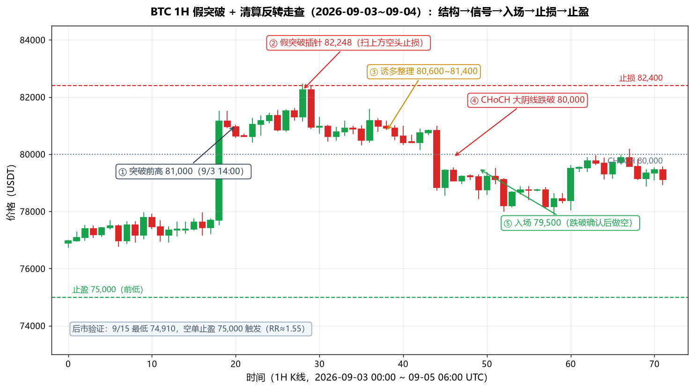
fig15 假突破+清算反转案例走查（结构/入场/止损/止盈标注）